<!doctype html>
<html lang="en">
<head>
  <meta charset="utf-8">
  <meta name="viewport" content="width=device-width, initial-scale=1">
  <title>arxiv digest — 2026-07-02</title>
  <style>
:root {
  --bg: #ffffff;
  --fg: #1f2328;
  --muted: #59636e;
  --border: #d0d7de;
  --card: #f6f8fa;
  --link: #0969da;
}
body {
  max-width: 980px;
  margin: 0 auto;
  padding: 2rem 1rem 5rem;
  font-family: -apple-system, BlinkMacSystemFont, "Segoe UI", Helvetica, Arial, sans-serif;
  line-height: 1.55;
  color: var(--fg);
  background: var(--bg);
}
a { color: var(--link); }
img { max-width: 100%; height: auto; }
pre, code { background: var(--card); border-radius: 6px; }
pre { padding: 1rem; overflow-x: auto; }
blockquote { border-left: 4px solid var(--border); padding-left: 1rem; color: var(--muted); }
details { margin: 0.6rem 0; }
summary { cursor: pointer; font-weight: 600; }
.paper-figures-scroll {
  display: flex;
  gap: 1rem;
  overflow-x: auto;
  overscroll-behavior-x: contain;
  padding: 0.75rem 0.25rem 1rem;
  margin: 1rem 0 1.25rem;
  border-top: 1px solid var(--border);
  border-bottom: 1px solid var(--border);
  scroll-snap-type: x proximity;
}
.paper-figure-card {
  flex: 0 0 min(260px, 72vw);
  scroll-snap-align: start;
  background: var(--card);
  border: 1px solid var(--border);
  border-radius: 12px;
  padding: 0.55rem;
}
.paper-figure-card img {
  display: block;
  width: 100%;
  max-height: 240px;
  object-fit: contain;
  background: white;
  border-radius: 8px;
}
.paper-figure-caption {
  display: block;
  margin-top: 0.5rem;
  color: var(--muted);
  font-size: 0.85rem;
}
.figure-strip-hint {
  color: var(--muted);
  font-size: 0.9rem;
  margin-bottom: -0.3rem;
}
</style>
  <!-- MathJax: renders $...$ inline math and $$...$$ display math, plus
       \(...\) and \[...\]. Loaded from the official CDN; works offline
       once cached. Configured to skip code/pre blocks so arxiv IDs that
       look like dollar amounts don't get mangled. -->
  <script>
    window.MathJax = {
      tex: {
        inlineMath: [['$', '$'], ['\\(', '\\)']],
        displayMath: [['$$', '$$'], ['\\[', '\\]']],
        processEscapes: true,
        processEnvironments: true
      },
      options: {
        skipHtmlTags: ['script', 'noscript', 'style', 'textarea', 'pre', 'code'],
        ignoreHtmlClass: 'tex2jax_ignore',
        processHtmlClass: 'tex2jax_process'
      }
    };
  </script>
  <script id="MathJax-script" async
    src="https://cdn.jsdelivr.net/npm/mathjax@3/es5/tex-chtml.js"></script>
</head>
<body>
<header style="background-color: #333; color: white; padding: 15px; margin-bottom: 20px;">
  <h1 style="margin: 0; font-size: 24px;">
    <a href="https://ochelpan.github.io/arXiv_clean/" style="color: white; text-decoration: none;">Main</a>
  </h1>
</header>

<h1>Daily arXiv Report</h1>

<hr>
<p>
<a href="index.html">← Index</a>
 · <a href="papers_01.html">← Previous</a> · <a href="papers_03.html">Next →</a>
</p>
<hr>

<h2>Papers 21–40</h2>
<p><a id="paper-2607.00583"></a></p>
<h3 id="open-quantum-systems-driven-by-chirped-pulses-quantized-versus-semiclassical-fields-and-the-validity-of-the-rotating-wave-approximation"><a href="http://arxiv.org/abs/2607.00583v1">Open Quantum Systems Driven by Chirped Pulses: Quantized versus Semiclassical Fields and the Validity of the Rotating-Wave Approximation</a></h3>
<p><strong>Authors:</strong> Justin Zhengjie Tan, Frank Großmann, Yiying Yan, Maxim Gelin, Yang Zhao<br>
<strong>Type:</strong> theory · <strong>Category:</strong> other · <strong>PDF:</strong> <a href="https://arxiv.org/pdf/2607.00583v1">https://arxiv.org/pdf/2607.00583v1</a><br>
<strong>Analysis basis:</strong> full PDF text, analyzed in chunks
<strong>Topic relevance:</strong> 🔥 <code>methods for driven-dissipative</code> <strong>4/5</strong> · <code>Keldysh / 2PI / non-Gaussian methods</code> <strong>3/5</strong> · <code>analog quantum simulation</code> <strong>2/5</strong> · <code>non-equilibrium dynamics</code> <strong>2/5</strong> · <code>Tavis-Cummings &amp; cavity-many-emitter</code> <strong>1/5</strong> · <code>correlated cavity matter</code> <strong>1/5</strong> · <code>driven-dissipative phase transition</code> <strong>1/5</strong> · <code>interference shaping light</code> <strong>1/5</strong></p>
<div class="figure-strip-hint">↔ Scroll figures horizontally</div>
<div class="paper-figures-scroll">
<figure class="paper-figure-card">

<figcaption class="paper-figure-caption"><b>Fig 1.</b> Figure 1. Time evolution of population transfer P1(t) of the quantum JC model (blue), quantum Rabi model (orange), semiclassical Rabi model (yellow) and semiclassical JC model (purple) with different initial mean photon number |α|2 for various pulse area: (a) |α|2 = 104, Θ = π; (b) |α|2 = 104, Θ = 2π; (c) |α|2 = 104, Θ = 3π; (d) |α|2 = 104, Θ = 4π; (e) |α|2 = 1, Θ = π; (f) |α|2 = 1, Θ = 2π; (g) |α|2 = 1, Θ = 3π; and (h) |α|2 = 1, Θ = 4π. The spin-phonon coupling A is set to be 0.22 ω−2 c , the spectral chirp ϕ′′ = −7 ω2 c and the energy gap at resonant excitation (ε = ω0) is set at 10 ωc.</figcaption>
</figure>
<figure class="paper-figure-card">

<figcaption class="paper-figure-caption"><b>Fig 2.</b> Figure 2. Two-dimensional heatmaps of the final transition probability Pf as a function of pulse area Θ and spin-phonon coupling A. The top row depicts the heatmaps for the spectral chirp ϕ′′ = −7 ω2 c for (a) QJC and (b) QRM. The bottom row shows the heatmaps for the spectral chirp ϕ′′ = −40 ω2 c for (c) QJC and (d) QRM. The following parameters are set at: |α|2 = 1 and ε = ω0 = 10 ωc.</figcaption>
</figure>
<figure class="paper-figure-card">

<figcaption class="paper-figure-caption"><b>Fig 3.</b> Figure 3. Two-dimensional heatmaps of the final transition probability Pf as a function of the laser and energy gap res- onance ε = ω0 and spectral chirp ϕ′′. The x-axis is plotted in log-scale in units of ωc. This figure is generated with the following parameters: Θ = 10π and A = 0.22 ω−2 c for the (a) QJC (|α|2 = 1), (b) QRM (|α|2 = 1), (c) SCJC and (d) SCRM.</figcaption>
</figure>
</div>

<p><strong>Summary.</strong> This paper rigorously compares quantum mechanical simulations against semiclassical models for population transfer driven by chirped pulses in open quantum systems. It demonstrates that while the RWA works well under certain conditions (high photon numbers), both the semiclassical description and the RWA break down when considering quantum fluctuations or large pulse areas. The findings guide researchers on selecting the appropriate theoretical framework for accurate quantum control predictions.</p>
<p><strong>Why it may be interesting.</strong> This work is highly relevant as it tackles the fundamental limitations of approximations (like RWA) when modeling complex light-matter interactions in open quantum systems, which is central to quantum control and cavity QED.</p>
<details>
<summary>Detailed structure</summary>
<p><strong>Main problem.</strong> The study compares quantum versus semiclassical descriptions of population transfer driven by chirped pulses, specifically investigating when approximations like the Rotating-Wave Approximation (RWA) break down.</p>
<p><strong>Main result.</strong> Robust population transfer can be achieved over a wide parameter range controlled by the laser chirp, and the comparison reveals that semiclassical models fail at low photon numbers or when counter-rotating terms become significant.</p>
<p><strong>Method.</strong> The authors employ a time-dependent variational approach using a multiple-Davydov trial state to simulate open quantum systems governed by modified Rabi/Jaynes-Cummings Hamiltonians.</p>
<p><strong>Model / system.</strong> The system involves an open quantum two-level spin coupled to a phononic bath, driven by chirped laser pulses. Models include the Quantum Rabi Model (QRM) and its semiclassical counterparts, analyzed in regimes ranging from high to low mean photon numbers.</p>
<p><strong>Key observables.</strong> Population transfer $P_1(t)$ and final-state population fidelity ($P_f$).</p>
<p><strong>Important parameters / regimes.</strong> Laser spectral chirp ($eta$), pulse area ($\Theta$), mean photon number $|\alpha|^2$, and spin-phonon coupling strength.</p>
<p><strong>Assumptions / limitations.</strong> The analysis compares results derived under the RWA versus full quantum treatments, and sometimes assumes zero-temperature phonon baths to isolate effects.</p>
<p><strong>Figures summary.</strong> Figures illustrate $P_1(t)$ comparisons across different models (JC vs Rabi) in high and low photon number regimes, showing convergence or divergence patterns based on model accuracy.</p>
<p><strong>Paper structure.</strong> The paper systematically compares the predictions of semiclassical versus fully quantized models for chirped adiabatic passage, analyzing the breakdown points related to RWA validity and field quantization effects across varying mean photon numbers.</p>
</details>
<details>
<summary>Abstract</summary>
<p>Population transfer via chirped rapid adiabatic passage is studied using open quantum and semiclassical models, with and without the rotating-wave approximation. A time-dependent variational approach based on the multiple-Davydov D$_2$ trial state is employed to simulate the quantum models with an arbitrary finite mean photon number. We examine the accuracy of both the semiclassical field description and the rotating-wave approximation. Robust population transfer is identified over a wide parameter regime controlled by the laser spectral chirp and is found to be insensitive to the spin--phonon coupling strength, Gaussian pulse area, and energy gap of the two-level system.</p>
</details>
<p><sub><a href="#top">↑ back to top</a></sub></p>

<p><a id="paper-2607.00767"></a></p>
<h3 id="power-law-relaxation-of-non-gaussian-parameter-and-self-dynamic-structure-factor-in-multidimensional-rugged-energy-landscapes"><a href="http://arxiv.org/abs/2607.00767v1">Power-Law Relaxation of Non-Gaussian Parameter and Self-Dynamic Structure Factor in Multidimensional Rugged Energy Landscapes</a></h3>
<p><strong>Authors:</strong> Bimman Bagchi<br>
<strong>Type:</strong> theory · <strong>Category:</strong> statistical mechanics · <strong>PDF:</strong> <a href="https://arxiv.org/pdf/2607.00767v1">https://arxiv.org/pdf/2607.00767v1</a><br>
<strong>Analysis basis:</strong> full PDF text, analyzed in chunks
<strong>Topic relevance:</strong> 🔥 <code>non-equilibrium dynamics</code> <strong>4/5</strong> · <code>Keldysh / 2PI / non-Gaussian methods</code> <strong>3/5</strong> · <code>non-equilibrium universality</code> <strong>3/5</strong> · <code>driven-dissipative phase transition</code> <strong>2/5</strong> · <code>Frenkel-Kontorova</code> <strong>1/5</strong> · <code>correlated / nonlocal dissipation</code> <strong>1/5</strong> · <code>methods for driven-dissipative</code> <strong>1/5</strong></p>
<div class="figure-strip-hint">↔ Scroll figures horizontally</div>
<div class="paper-figures-scroll">
<figure class="paper-figure-card">

<figcaption class="paper-figure-caption"><b>Fig 1.</b> Figure 1: One-dimensional analytical prediction for the non-Gaussian parameter α2(t) in the uncorrelated BBSB rugged landscape model. [14] The dimensionless time is D0t/b2, and the ruggedness values are ϵ = 0.2, 0.5, 1.0, 2.0. (A) Raw α2(t) on ordinary axes. (B) Raw α2(t) on log–log axes, showing comparison with the asymptotic one-dimensional t−1/2 decay. (C) Normalized non-Gaussian parameter α2(t)/α2(0+), emphasizing the relaxation of mobility memory.</figcaption>
</figure>
</div>

<p><strong>Summary.</strong> This theoretical paper develops a framework to study diffusion on rugged energy landscapes by analyzing the time decay of the non-Gaussian parameter. It shows that this relaxation rate depends critically on dimensionality, predicting distinct power laws ($t^{-1/2}, (\ln t)/t, t^{-1}$) for 1D, 2D, and $d>2$, respectively. This work moves beyond simple long-time diffusion coefficients to capture finite-time memory effects.</p>
<p><strong>Why it may be interesting.</strong> This work provides quantitative, dimension-dependent predictions for how memory effects and quenched disorder manifest in transport properties, which is crucial for understanding non-equilibrium dynamics in complex quantum systems.</p>
<details>
<summary>Detailed structure</summary>
<p><strong>Main problem.</strong> The research aims to characterize anomalous, non-Gaussian diffusion dynamics beyond the simple effective diffusion coefficient in systems trapped by rugged energy landscapes.</p>
<p><strong>Main result.</strong> The relaxation of the non-Gaussian parameter exhibits a distinct power-law dependence on dimensionality: $t^{-1/2}$ in 1D, $(\ln t)/t$ in 2D, and $t^{-1}$ for $d>2$.</p>
<p><strong>Method.</strong> A theoretical framework using the self-propagator and mobility-memory approximation is developed to analyze finite-time dynamics.</p>
<p><strong>Model / system.</strong> The model involves tagged-particle diffusion on multidimensional rugged energy landscapes, which are mathematically described by correlated quenched Gaussian random fields.</p>
<p><strong>Key observables.</strong> Non-Gaussian parameter ($\alpha_2(t|
ho_0)$), self-dynamic structure factor ($F_s$), and the time correlation of local mobility ($C_D(t)$).</p>
<p><strong>Important parameters / regimes.</strong> Dimensionality ($d$), ruggedness strength ($\epsilon$), spatial correlation length ($\xi$), and initial preparation state ($
ho_0$).</p>
<p><strong>Assumptions / limitations.</strong> The analysis relies on a coarse-grained mobility field and the assumption that the system approaches Gaussian behavior via central limit mechanisms in higher dimensions.</p>
<p><strong>Figures summary.</strong> Figures illustrate the analytical prediction for $\alpha_2(t)$ decay, showing the characteristic $t^{-1/2}$ decay in 1D versus faster decays in higher dimensions on log-log plots.</p>
<p><strong>Paper structure.</strong> The paper builds from analyzing the full propagator to deriving a local-mobility representation. It establishes the dimensional hierarchy of relaxation rates for $\alpha_2(t)$, contrasting it with previous methods that only focused on long-time effective coefficients.</p>
</details>
<details>
<summary>Abstract</summary>
<p>Ruggedness of the underlying energy landscape gives rise to heterogeneous mobility and non-Gaussian diffusion. We develop a theoretical framework for tagged-particle diffusion in multidimensional rugged energy landscapes modeled as correlated quenched Gaussian random fields. Using the self-propagator and self-dynamic structure factor, we characterize finite-time diffusion beyond the effective diffusion coefficient. We determine the effects of dimensionality, spatial correlations, and initial preparation. By introducing a coarse-grained mobility field and a mobility-memory approximation, we relate the non-Gaussian parameter to the time correlation of the mobility sampled by the particle. In the homogenized diffusive regime, the mobility correlation decays algebraically, leading to long-time relaxation of the non-Gaussian parameter as $t^{-1/2}$ in one dimension, $(\ln t)/t$ in two dimensions, and $t^{-1}$ for $d>2$, with amplitudes that depend on dimensionality and the initial ensemble. Our results show that rugged energy landscapes leave distinct signatures in the effective diffusion coefficient, self-dynamic structure factor, and relaxation of non-Gaussian fluctuations.</p>
</details>
<p><sub><a href="#top">↑ back to top</a></sub></p>

<p><a id="paper-2607.00826"></a></p>
<h3 id="synthesizing-compound-pulse-gadgets-for-hamiltonian-simulation-on-trapped-ion-platforms"><a href="http://arxiv.org/abs/2607.00826v1">Synthesizing Compound Pulse Gadgets for Hamiltonian Simulation on Trapped-Ion Platforms</a></h3>
<p><strong>Authors:</strong> Ria Patel, Masoud Hakimi Heris, Yuan Liu, Frank Mueller<br>
<strong>Type:</strong> theory · <strong>Category:</strong> other · <strong>PDF:</strong> <a href="https://arxiv.org/pdf/2607.00826v1">https://arxiv.org/pdf/2607.00826v1</a><br>
<strong>Analysis basis:</strong> full PDF text, analyzed in chunks
<strong>Topic relevance:</strong> 🔥 <code>QC/QI experiment</code> <strong>4/5</strong> · <code>analog quantum simulation</code> <strong>3/5</strong> · <code>methods for driven-dissipative</code> <strong>3/5</strong> · <code>non-equilibrium dynamics</code> <strong>2/5</strong> · <code>Keldysh / 2PI / non-Gaussian methods</code> <strong>1/5</strong> · <code>correlated / nonlocal dissipation</code> <strong>1/5</strong> · <code>driven-dissipative phase transition</code> <strong>1/5</strong></p>
<div class="figure-strip-hint">↔ Scroll figures horizontally</div>
<div class="paper-figures-scroll">
<figure class="paper-figure-card">
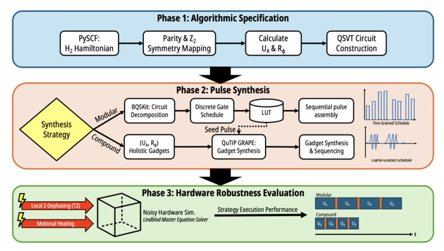
<figcaption class="paper-figure-caption"><b>Fig 1.</b> Fig. 1: The pulse-level compilation pipeline. Phase 1 maps the H2 Hamiltonian to a 3-ion QSVT specification. Phase 2 contrasts standard modular transpilation (sequential pulse assembly via LUT memory lookups) against the proposed holistic gadget synthesis. Phase 3 evaluates strategy execution performance, benchmarking the temporal compression of the generated schedules against static hardware noise using open-system Lindblad simulations.</figcaption>
</figure>
<figure class="paper-figure-card">

<figcaption class="paper-figure-caption"><b>Fig 2.</b> Fig. 2: Comparison of physical control schedules constructed by the modular baseline and the proposed compound gadget synthesis strategy for QSVT-based Hamiltonian simulation.</figcaption>
</figure>
<figure class="paper-figure-card">
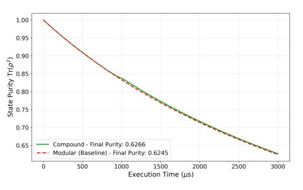
<figcaption class="paper-figure-caption"><b>Fig 3.</b> Fig. 3: Hardware resilience evaluated via open-system purity decay (Tr(ρ2)) over a 3 ms execution window, comparing the baseline modular stitching against the proposed compound compilation.</figcaption>
</figure>
</div>

<p><strong>Summary.</strong> This paper introduces a novel pulse synthesis technique that compiles complex quantum algorithms directly into continuous 'compound pulse gadgets' rather than relying on discrete gate sequences. By using GRAPE to synthesize these gadgets for H2 simulation on trapped ions, the authors demonstrate significant temporal compression and elimination of classical control overhead. This methodology promises faster, more robust execution paths closer to fundamental decoherence limits.</p>
<p><strong>Why it may be interesting.</strong> This work directly addresses the hardware-software gap in trapped-ion quantum computing by optimizing physical control pulses holistically, which is crucial for pushing computational depth beyond decoherence limits in open quantum systems.</p>
<details>
<summary>Detailed structure</summary>
<p><strong>Main problem.</strong> Standard gate-level compilation introduces significant noise and overhead for high-precision quantum algorithms on trapped-ion hardware by treating operations as discrete units.</p>
<p><strong>Main result.</strong> The proposed holistic pulse synthesis strategy achieves significant temporal compression and eliminates control-layer latency compared to standard compilers, increasing achievable computational depth.</p>
<p><strong>Method.</strong> The authors use Gradient Ascent Pulse Engineering (GRAPE) to synthesize entire algorithmic blocks directly into continuous compound pulse gadgets, bypassing discrete gate stitching.</p>
<p><strong>Model / system.</strong> The work targets Hamiltonian simulation of the H2 molecule using a QSVT circuit on a trapped-ion platform with 3 computational ions. The system is evaluated using noisy Lindblad master equation simulations incorporating T2 noise and motional heating.</p>
<p><strong>Key observables.</strong> Temporal compression of pulse schedules, reduction in control-layer latency, and open-system purity decay (Tr(rho_2)).</p>
<p><strong>Important parameters / regimes.</strong> The simulation uses a 3 computational ion system for H2 Hamiltonian simulation; the comparison is against fundamental T2 decoherence limits.</p>
<p><strong>Assumptions / limitations.</strong> Initial synthesis assumes noiseless conditions, excluding environmental noise and ambient CV heating to keep matrix exponentials tractable during optimization.</p>
<p><strong>Figures summary.</strong> Figure 1 illustrates the compilation pipeline contrasting modular vs. holistic methods; Figure 2 compares physical control schedules; Figure 3 evaluates hardware resilience via purity decay over time.</p>
<p><strong>Paper structure.</strong> The paper progresses from identifying the noise limitations of discrete transpilation to proposing a continuous pulse synthesis gadget approach, demonstrating this on H2 simulation, and finally evaluating performance against realistic noise models.</p>
</details>
<details>
<summary>Abstract</summary>
<p>Standard gate-level transpilation introduces significant physical noise and overhead for high-precision quantum algorithms, such as the Quantum Singular Value Transformation (QSVT), on near-term trapped-ion hardware. Current compilers treat quantum operations as discrete units, forcing the physical control layer to execute highly fragmented laser pulses. To address this hardware-software disconnect, this work introduces a holistic pulse synthesis strategy that bypasses discrete gate-stitching to compile algorithms directly into continuous compound pulse gadgets. As a proof-of-concept, we target Hamiltonian simulation of the $H_2$ molecule, block-encoding the problem into a QSVT circuit to approximate the time-evolution operator $U = e^{-i H t}$ across 3 computational ions (2 system, 1 ancilla). We utilize the Gradient Ascent Pulse Engineering (GRAPE) algorithm to generate these compound gadgets and evaluate our methodology using noisy Lindblad master equation simulations. Preliminary observations indicate that the proposed strategy achieves significant temporal compression, reducing the total pulse schedule duration compared to standard compilers. Furthermore, synthesizing operations holistically eliminates the control-layer latency associated with discrete pulse lookup overhead. By streamlining the physical control schedule, this methodology offers a promising pathway to execute operations faster, highlighting the potential for compound gadgets to increase the computational depth achievable within fundamental $T_2$ decoherence limits.</p>
</details>
<p><sub><a href="#top">↑ back to top</a></sub></p>

<p><a id="paper-2607.01076"></a></p>
<h3 id="universal-short-imaginary-time-quantum-critical-dynamics-near-boundaries"><a href="http://arxiv.org/abs/2607.01076v1">Universal Short-Imaginary-Time Quantum Critical Dynamics Near Boundaries</a></h3>
<p><strong>Authors:</strong> Yu-Rong Shu, Yuan-Biao Li, Shuai Yin<br>
<strong>Type:</strong> theory · <strong>Category:</strong> statistical mechanics · <strong>PDF:</strong> <a href="https://arxiv.org/pdf/2607.01076v1">https://arxiv.org/pdf/2607.01076v1</a><br>
<strong>Analysis basis:</strong> full PDF text, analyzed in chunks
<strong>Topic relevance:</strong> 🔥 <code>non-equilibrium universality</code> <strong>4/5</strong> · <code>driven-dissipative phase transition</code> <strong>3/5</strong> · <code>non-equilibrium dynamics</code> <strong>3/5</strong> · <code>Keldysh / 2PI / non-Gaussian methods</code> <strong>1/5</strong> · <code>analog quantum simulation</code> <strong>1/5</strong> · <code>correlated / nonlocal dissipation</code> <strong>1/5</strong> · <code>methods for driven-dissipative</code> <strong>1/5</strong></p>
<div class="figure-strip-hint">↔ Scroll figures horizontally</div>
<div class="paper-figures-scroll">
<figure class="paper-figure-card">

<figcaption class="paper-figure-caption"><b>Fig 1.</b> FIG. 1. Dynamics of the boundary order parameter 𝑀𝑠from the ordered initial state. (a) and (b): Evolution of 𝑀before and after rescaling for the ordinary transition. (c) and (d): Evolution of 𝑀be- fore and after rescaling for the special transition. The solid lines indi- cate power-law decay with the exponent 𝛽1/𝜈𝑧= 1.2704 and 0.3535 for the ordinary and special transition, respectively. Log-log scale is used in all plots.</figcaption>
</figure>
<figure class="paper-figure-card">
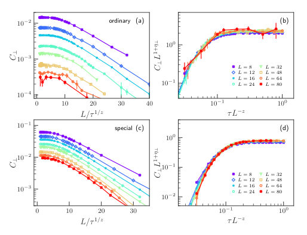
<figcaption class="paper-figure-caption"><b>Fig 2.</b> FIG. 2. Dynamics of the transverse correlation 𝐶⊥from the dis- ordered initial state. (a): Dependence of 𝐶⊥on 𝐿/𝜏1/𝑧for the ordi- nary transition with 𝜂⊥= 1.7887. (b): Finite-size rescaling collapse of the data in (a). (c): Same as (a), but for the special transition, 𝜂⊥= 0.8718. (d): Finite-size rescaling collapse of the data in (c). Semi-log scale is used in (a), (c), while (b), (d) use log-log scale. The straight lines in (a) and (c) indicate exponential dependence.</figcaption>
</figure>
<figure class="paper-figure-card">

<figcaption class="paper-figure-caption"><b>Fig 3.</b> FIG. 4. Dynamics of the boundary autocorrelation 𝐴𝑠from the disordered initial state. (a): Imaginary-time evolution of 𝐴𝑠for the ordinary transition. (b): Finite-size rescaling collapse of the data in (a). (c): Same as (a), but for the special transition. (d): Finite-size rescaling collapse of the data in (c). The solid lines indicate power- law decay with the exponent 𝜃1 −𝑑/𝑧, with 𝜃1 = −1.295 and 0.539 for the ordinary and special transition, respectively. Log-log scale is used in all plots.</figcaption>
</figure>
<figure class="paper-figure-card">

<figcaption class="paper-figure-caption"><b>Fig 4.</b> FIG. 3. Dynamics of the longitudinal correlation 𝐶∥near the boundary from the disordered initial state. (a): Dependence of 𝐶∥ on 𝐿/𝜏1/𝑧for the ordinary transition with 𝜂∥= 2.5408. (b): Finite- size rescaling collapse of the data in (a). (c): Same as (a), but for the special transition 𝜂∥= 0.7070. (d): Finite-size rescaling collapse of the data in (c). Semi-log scale is used in (a), (c), while (b), (d) use log-log scale. The straight lines in (a) and (c) indicate exponential dependence.</figcaption>
</figure>
</div>

<p><strong>Summary.</strong> This work develops and verifies a universal scaling theory describing how quantum critical dynamics behave near boundaries. Using the 2D quantum Ising model, the authors derive distinct power-law decay laws for various boundary correlation functions depending on whether the system is in an ordinary or special universality class. This provides new physical insights into boundary criticality beyond standard bulk descriptions.</p>
<p><strong>Why it may be interesting.</strong> The explicit derivation of novel boundary critical exponents ($  heta_1$) that deviate from standard quantum-classical mappings provides a powerful new tool for characterizing non-equilibrium dynamics in condensed matter systems, relevant to understanding quench dynamics or boundary effects in quantum materials.</p>
<details>
<summary>Detailed structure</summary>
<p><strong>Main problem.</strong> The study investigates universal short-imaginary-time quantum critical dynamics occurring near boundaries, recognizing that boundary effects modify standard bulk critical scaling behaviors.</p>
<p><strong>Main result.</strong> A universal scaling theory is developed showing distinct dynamic exponents ($  heta_1$ vs. $   heta$) for boundary correlations compared to the bulk, and these exponents can differ significantly between ordinary and special transition universality classes.</p>
<p><strong>Method.</strong> The authors develop a universal scaling theory by analyzing various correlation functions (order parameter, autocorrelation) under short-imaginary-time evolution using methods derived from generalizing Short-Distance Expansion techniques.</p>
<p><strong>Model / system.</strong> The primary model used for verification is the two-dimensional quantum Ising model on a square lattice. The Hamiltonian includes transverse field terms and nearest-neighbor interactions, analyzed with periodic boundary conditions in one direction and open boundaries in another.</p>
<p><strong>Key observables.</strong> Boundary order parameter ($M_s$), boundary autocorrelation function ($A_s$), local two-time correlation functions ($P(	au), G(	au)$), and associated critical initial-slip exponents ($ heta_1,     heta'_1$).</p>
<p><strong>Important parameters / regimes.</strong> The analysis focuses on the short-imaginary-time limit ($   au  o 0$) near quantum critical points, distinguishing between ordinary and special universality classes.</p>
<p><strong>Assumptions / limitations.</strong> The theory relies on developing a universal scaling framework that connects boundary exponents to bulk exponents, though it notes deviations from conventional quantum-classical mapping.</p>
<p><strong>Figures summary.</strong> Figures illustrate data collapse for various correlation functions ($M_s$, $A_s$, $G_s$) in both the ordinary and special transition regimes, confirming the predicted power-law scaling forms for boundary dynamics.</p>
<p><strong>Paper structure.</strong> The paper develops a universal scaling theory for short-imaginary-time dynamics near boundaries. It analyzes different initial states (ordered/disordered) using various correlation functions ($M_s$, $A_s$). Key findings establish relationships between boundary and bulk exponents, contrasting the behavior across different universality classes.</p>
</details>
<details>
<summary>Abstract</summary>
<p>While imaginary-time evolution has long served as a standard paradigm for ground-state preparation in numerical simulations and quantum devices, its intrinsic dynamical properties has been largely overlooked. Here, we investigate the short-imaginary-time critical dynamics in quantum systems with boundaries. A universal scaling theory is developed and verified in the two-dimensional quantum Ising model, uncovering rich dynamic critical behaviors dictated by boundary universality classes. For ordered initial states, the boundary order parameter $M_s$ decays with imaginary time $τ$ as $M_s \propto τ^{-β_1/νz}$, where $β_1$ denotes the boundary order parameter exponent, and $ν$ and $z$ correspond to the correlation length exponent and the dynamic exponent, respectively. For disordered initial states, the autocorrelation of the boundary order parameter is governed by a novel critical exponent $θ_1$, which is closely related to the critical initial slip behavior of $M_s$ characterized by the corresponding exponent $θ_1'$. In contrast to its positive bulk counterpart, the boundary initial-slip exponent $θ_1'$ is negative for the ordinary transition while remaining positive for the special transition. Although the static universality classes of $d$-dimensional quantum phase transitions generally coincide with those of $(d+1)$-dimensional classical phase transitions, we show that $θ_1$ does not follow this conventional quantum-classical mapping. We further discuss the implications of our results for more exotic forms of boundary criticality. Our findings provide new physical insights into boundary critical dynamics and offer a novel route for probing exotic boundary critical behaviors in quantum many-body systems.</p>
</details>
<p><sub><a href="#top">↑ back to top</a></sub></p>

<p><a id="paper-2607.00193"></a></p>
<h3 id="tcl4-asymptotic-redundancy-and-canonically-consistent-master-equations"><a href="http://arxiv.org/abs/2607.00193v1">TCL4 Asymptotic Redundancy and Canonically Consistent Master Equations</a></h3>
<p><strong>Authors:</strong> Dragomir Davidovic<br>
<strong>Type:</strong> theory · <strong>Category:</strong> statistical mechanics · <strong>PDF:</strong> <a href="https://arxiv.org/pdf/2607.00193v1">https://arxiv.org/pdf/2607.00193v1</a><br>
<strong>Analysis basis:</strong> full PDF text, analyzed in chunks
<strong>Topic relevance:</strong> 🔥 <code>methods for driven-dissipative</code> <strong>4/5</strong> · <code>Keldysh / 2PI / non-Gaussian methods</code> <strong>3/5</strong> · <code>non-equilibrium dynamics</code> <strong>2/5</strong> · <code>correlated / nonlocal dissipation</code> <strong>1/5</strong> · <code>correlated cavity matter</code> <strong>1/5</strong> · <code>driven-dissipative phase transition</code> <strong>1/5</strong> · <code>non-equilibrium universality</code> <strong>1/5</strong></p>
<div class="figure-strip-hint">↔ Scroll figures horizontally</div>
<div class="paper-figures-scroll">
<figure class="paper-figure-card">
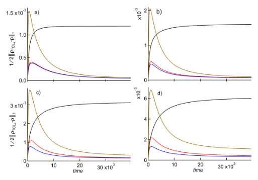
<figcaption class="paper-figure-caption"><b>Fig 1.</b> FIG. 1. Three canonically consistent closures of the Redfield equation. Time evolution of the trace distance between the TCL4 solution and the solutions of four mas- ter equations for a four-level system. The black, red, blue, and brown curves correspond to the Redfield equation, the latent-resonance closure, the virtual-coherence closure, and the expanded virtual-coherence closure, respectively. The de- phasing parameter ξ = 0, 1, 2, 3 in panels (a)–(d), respectively. λ2 = 1.25×10−3, kBT = 0.26. The remaining parameters are given in Appendix A, Sample 1.</figcaption>
</figure>
<figure class="paper-figure-card">

<figcaption class="paper-figure-caption"><b>Fig 2.</b> FIG. 2. Schematic representation of the cancellations ap- pearing in the induction step N →N + 1. Each rectangle represents a contribution to the latent-resonance interaction shell generated by the addition of the level M = N + 1. The upper block (“action”) contains the terms induced in the pre- existing N-level generator and represents the ten terms in Eq. (B39). The lower block (“reaction”) contains the contri- butions from the new matrix element Lnn,MM and represents the ten terms in Eq. (B40). Double boxes denote terms carry- ing an additional prefactor of 2. Colored connections indicate direct and KMS-induced cancellations. After these cancella- tions, only the newly generated...</figcaption>
</figure>
</div>

<p><strong>Summary.</strong> The paper tackles the complexity of describing open quantum systems relaxing to equilibrium by analyzing the $ ext{TCL}_4$ generator. It demonstrates that much of this high-order mathematical structure is asymptotically redundant. The true, simplest description of the stationary state is captured by a 'virtual coherence pathway,' providing a canonical and highly accurate closure for master equations.</p>
<p><strong>Why it may be interesting.</strong> This work provides a rigorous mathematical framework for simplifying complex, high-order master equations derived from open quantum system theory, offering predictive power by identifying which terms are physically redundant in the long-time limit.</p>
<details>
<summary>Detailed structure</summary>
<p><strong>Main problem.</strong> The central problem is understanding the opaque dynamics of open quantum systems as they relax to a Kubo–Martin–Schwinger (KMS) equilibrium state, specifically resolving the stationary-state problem inherent in approximations like the Redfield equation.</p>
<p><strong>Main result.</strong> The complex fourth-order Time-Convolutionless ($   ext{TCL}_4$) generator is shown to contain asymptotically redundant components; its true asymptotic behavior is governed by a simpler 'virtual coherence pathway' that correctly reproduces second-order stationary-state corrections.</p>
<p><strong>Method.</strong> The authors employ successive, stationary-state-preserving transformations on the $ ext{TCL}_4$ generator and utilize analytical continuation techniques (like unfolding latent resonances) to simplify the dynamics while preserving equilibrium properties.</p>
<p><strong>Model / system.</strong> The system is an open quantum system coupled linearly to a thermal bath. The dynamics are governed by reduced density matrices ($
ho_S(t)$), analyzed using perturbative expansions in the weak coupling constant $\lambda$.</p>
<p><strong>Key observables.</strong> Relaxation towards KMS equilibrium, second-order stationary-state corrections ($p^{(2)}$), and the structure of the TCL generator components.</p>
<p><strong>Important parameters / regimes.</strong> Coupling strength ($\lambda$), small scale parameter ($\epsilon$) used for analytic continuation near degeneracies, and temperature ($k_B T$).</p>
<p><strong>Assumptions / limitations.</strong> The analysis relies on assuming the existence of asymptotic transformations that eliminate redundant terms, and in some cases, assumes validity based on numerical evidence rather than a general proof (e.g., selection rules for arbitrary dimension $N$).</p>
<p><strong>Figures summary.</strong> Figures illustrate the time evolution of trace distance between different master equation closures ($  ext{TCL}_4$ vs. Redfield vs. virtual-coherence closure) for a four-level system, demonstrating improved fidelity with compression.</p>
<p><strong>Paper structure.</strong> The paper builds by first identifying the redundancy in $  ext{TCL}_4$, then using stationary-state-preserving transformations to derive simpler closures (latent-resonance and virtual-coherence), culminating in proving that the final compressed form yields the correct equilibrium dynamics matching established results like the mean-force Gibbs correction.</p>
</details>
<details>
<summary>Abstract</summary>
<p>Left alone, open quantum systems relax toward a Kubo--Martin--Schwinger (KMS) equilibrium state, yet the inner workings of this process remain opaque. It remains unclear why the intricate fourth-order time-convolutionless (TCL4) population generator reproduces the comparatively simple second-order stationary state corrections. Even more surprisingly, stationary-state corrections of such precision can be compressed into a simple virtual coherence pathway: an open quantum systems analogue of virtual transitions, in which populations communicate through coherences that are never occupied.   Here we show that this simplification arises through a sequence of stationary-state-preserving transformations that progressively eliminate asymptotically redundant components while preserving the stationary state, ultimately yielding the virtual coherence pathway. This resolves the longstanding stationary-state problem of the Redfield equation and reveals that much of the apparent complexity of the TCL4 generator is asymptotically redundant.</p>
</details>
<p><sub><a href="#top">↑ back to top</a></sub></p>

<p><a id="paper-2607.00284"></a></p>
<h3 id="active-learning-for-calibrating-entangling-gates-via-surrogate-based-optimization"><a href="http://arxiv.org/abs/2607.00284v1">Active Learning for Calibrating Entangling Gates via Surrogate-Based Optimization</a></h3>
<p><strong>Authors:</strong> Caleb Walton, Patricia García-Caspueñas, Filippo Zacchei, Ana Larrañaga, Steven L. Brunton, Sara Mouradian<br>
<strong>Type:</strong> both · <strong>Category:</strong> other · <strong>PDF:</strong> <a href="https://arxiv.org/pdf/2607.00284v1">https://arxiv.org/pdf/2607.00284v1</a><br>
<strong>Analysis basis:</strong> full PDF text, analyzed in chunks
<strong>Topic relevance:</strong> 🔥 <code>QC/QI experiment</code> <strong>4/5</strong> · <code>quantum measurements</code> <strong>3/5</strong> · <code>quantum optics experiment</code> <strong>2/5</strong> · <code>analog quantum simulation</code> <strong>1/5</strong> · <code>measurement-induced transitions</code> <strong>1/5</strong> · <code>methods for driven-dissipative</code> <strong>1/5</strong></p>
<div class="figure-strip-hint">↔ Scroll figures horizontally</div>
<div class="paper-figures-scroll">
<figure class="paper-figure-card">
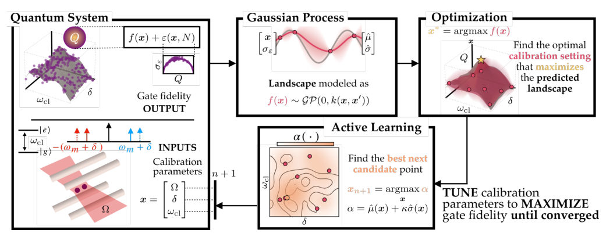
<figcaption class="paper-figure-caption"><b>Fig 1.</b> FIG. 1. Schematic of the optimization pipeline. The goal is to maximize the gate fidelity score Q as a function of the calibration parameters: Rabi frequency Ω, sideband detuning δ and center-line detuning ωcl. First, the score is queried from the Quantum System, represented by an unknown noise-free landscape f(x) and a modeled noise term ε dependent on the inputs and the number of measurements shots N. Next, a Gaussian Process acts as a probabilistic surrogate that models f(x) from the available system scores to predict the mean and variance of unexplored calibration settings. This surrogate is exploited for fast Optimization of the predicted mean landscape. Finally, an Active Learning...</figcaption>
</figure>
<figure class="paper-figure-card">
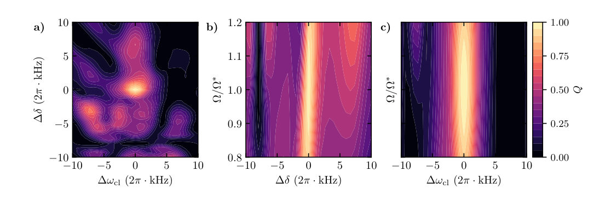
<figcaption class="paper-figure-caption"><b>Fig 2.</b> FIG. 2. Two-parameter calibration landscapes for the two-MSπ/2 sequence. Each panel plots the infinite-shot gate score (Q∞) while two controls are varied and the remaining controls are fixed at their optimized values. Brighter regions correspond to higher, more optimal scores. The panels depict variations in: (a) sideband detuning and center-line detuning, (b) Rabi frequency and sideband detuning, and (c) Rabi frequency and center-line detuning.</figcaption>
</figure>
<figure class="paper-figure-card">

<figcaption class="paper-figure-caption"><b>Fig 3.</b> FIG. 3. Root Mean Square Error distributions of the GP predictions relative to the true landscape. The surrogate’s performance is evaluated across different numbers of measurement shots N (grouped on the x-axis) and varying numbers of training points m. The errors are displayed as violin plots. The dashed gray lines correspond to the mean binomial noise σε for each N and provide a reference of the expected uncertainty.</figcaption>
</figure>
<figure class="paper-figure-card">
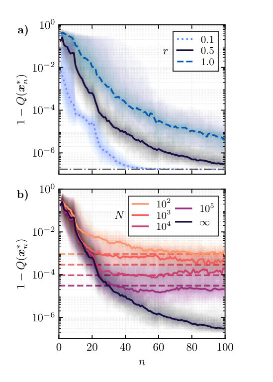
<figcaption class="paper-figure-caption"><b>Fig 4.</b> FIG. 4. Results of BO with active learning. (a) Deter- ministic optimization trajectories for: r = 1.0, dashed black, spans ±2π × 10 kHz in ωcl and δ, and ±20% in laser amplitude. The half-scale (r = 0.5, solid dark blue) and one-tenth-scale (r = 0.1, dotted blue) cases reduce these bounds by factors of two and ten, respectively. The vertical axis shows the op- timization loss, 1 −Q∞. The bold curves show the median trajectory and shaded trajectories span the 5th to 95th per- centile. The gray dashed-dotted line represents the simulation fidelity limit. (b) Optimization trajectories with finite-shot sampling evaluated at the half-scale parameter range (r = 0.5). Trajectories are shown for N...</figcaption>
</figure>
<figure class="paper-figure-card">

<figcaption class="paper-figure-caption"><b>Fig 5.</b> FIG. 5. Gaussian Process fitting and active learning distributions for the N = 100 scenario. (a,b) 1D slices of the predicted score Q along ∆δ and Ω/Ω∗, respectively. The calibration parameters not shown in a given slice are fixed at their optimal values. Solid colored lines and shaded regions correspond to the surrogate’s predicted mean ˆµ and uncertainty ˆσ at different iterations n of the active learning loop. The dashed black line represents the target infinite-shot noiseless landscape Q∞. (c,d) Distribution of candidate points xn sampled during the active learning step across all iterations (from 1 to nmax) and 100 independent runs, where denser blue regions indicate parameters sampled...</figcaption>
</figure>
</div>

<p><strong>Summary.</strong> The paper presents an active learning framework using Gaussian Processes to calibrate the parameters of entangling gates on trapped ions. By iteratively querying the system at the most informative points, this method efficiently navigates noisy measurement data to pinpoint optimal control settings. This establishes a powerful, model-agnostic tool for quantum hardware characterization.</p>
<p><strong>Why it may be interesting.</strong> This work directly addresses the practical bottleneck of quantum hardware: characterization. Using ML techniques like GP surrogates allows researchers to map out complex, high-dimensional control landscapes without needing a perfect underlying Hamiltonian model, which is crucial for scaling up trapped-ion systems.</p>
<details>
<summary>Detailed structure</summary>
<p><strong>Main problem.</strong> The core challenge is accurately calibrating quantum gates, like the Mølmer-Sørensen entangling gate, because their fidelity is highly sensitive to unknown physical control parameters and difficult to model exactly.</p>
<p><strong>Main result.</strong> The authors demonstrate that combining Active Learning with Gaussian Process surrogate models provides an efficient, data-driven framework to rapidly discover optimal gate parameters despite significant quantum projection noise.</p>
<p><strong>Method.</strong> They employ Bayesian Optimization (BO) guided by a Gaussian Process (GP) surrogate model. This GP learns the unknown relationship between control parameters and gate fidelity from noisy measurements, using an acquisition function to select the next most informative measurement point.</p>
<p><strong>Model / system.</strong> The physical system is a trapped-ion quantum processor used to implement two-qubit gates via the Mølmer-Sørensen (MS) interaction. The optimization targets finding optimal laser amplitudes and frequencies that maximize gate fidelity.</p>
<p><strong>Key observables.</strong> Gate fidelity ($Q$), state probabilities ($P_{ee}$), Mean Squared Scaled Error (MSSE).</p>
<p><strong>Important parameters / regimes.</strong> Rabi frequency ($\Omega$), sideband detuning ($\delta$), center-line detuning ($\omega_{cl}$), and the number of measurement shots ($N$).</p>
<p><strong>Assumptions / limitations.</strong> The noise is assumed to be heteroskedastic (dependent on parameters/shots), and the GP model provides a flexible, non-parametric approximation of the unknown physical landscape.</p>
<p><strong>Figures summary.</strong> Figures illustrate the optimization pipeline, showing how the GP predicts mean/variance across parameter space. They also show fidelity saturation curves confirming noise scaling with shot count ($N$) and cross-sections visualizing the learned optimal regions.</p>
<p><strong>Paper structure.</strong> The paper establishes the problem (parameter sensitivity), introduces the BO/GP framework for model-free optimization, validates it by simulating gate calibration on trapped ions, and analyzes convergence rates relative to measurement noise.</p>
</details>
<details>
<summary>Abstract</summary>
<p>The fidelity of a quantum gate is sensitive to small deviations in the physical control parameters. Unfortunately, it is generally difficult to exactly model the implemented Hamiltonian for a set of user-defined parameters, necessitating on-device calibration. Here, we present an active learning framework based on Bayesian optimization with a Gaussian Process surrogate to find the optimal parameter set. We validate the technique through numerical calibration of the laser amplitude and frequencies that implement the trapped-ion Mølmer Sørensen gate. We show that a Gaussian process can model the Hamiltonian dynamics. The addition of active learning accelerates the discovery of the optimal parameter set with speed and final fidelity dependent on the quantum projection noise of the data. These results establish the utility of active learning and surrogate models for quantum calibration and control.</p>
</details>
<p><sub><a href="#top">↑ back to top</a></sub></p>

<p><a id="paper-2607.01056"></a></p>
<h3 id="bandwidth-limited-critical-currents-in-electrically-tunable-moire-bands"><a href="http://arxiv.org/abs/2607.01056v1">Bandwidth-Limited Critical Currents in Electrically Tunable Moiré Bands</a></h3>
<p><strong>Authors:</strong> Riccardo Bertini, Xueqiao Wang, Sergey Slizovskiy, Zhiren Zheng, Julien Barrier, Chiara Pizzo, Robin Smeyers, Krystian Nowakowski, Hitesh Agarwal, Alvaro Moreno, Bert Jorissen, Kenji Watanabe, Takashi Taniguchi, Milorad V. Milošević, Lucian Covaci, Vladimir Fal'ko, Pablo Jarillo-Herrero, Roshan Krishna Kumar, Frank H. L. Koppens<br>
<strong>Type:</strong> both · <strong>Category:</strong> strongly correlated electrons · <strong>PDF:</strong> <a href="https://arxiv.org/pdf/2607.01056v1">https://arxiv.org/pdf/2607.01056v1</a><br>
<strong>Analysis basis:</strong> full PDF text, analyzed in chunks
<strong>Topic relevance:</strong> 🔥 <code>non-equilibrium dynamics</code> <strong>4/5</strong> · <code>non-equilibrium universality</code> <strong>3/5</strong> · <code>Keldysh / 2PI / non-Gaussian methods</code> <strong>1/5</strong> · <code>analog quantum simulation</code> <strong>1/5</strong> · <code>correlated / nonlocal dissipation</code> <strong>1/5</strong> · <code>driven-dissipative phase transition</code> <strong>1/5</strong> · <code>methods for driven-dissipative</code> <strong>1/5</strong></p>
<div class="figure-strip-hint">↔ Scroll figures horizontally</div>
<div class="paper-figures-scroll">
<figure class="paper-figure-card">
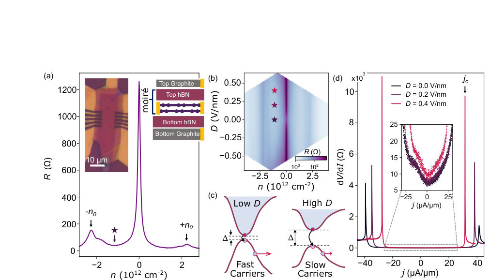
<figcaption class="paper-figure-caption"><b>Fig 1.</b> Figure 1: Low- and high-current transport regimes in BLG/hBN superlattices. (a) Four-probe resistance for device X3 at D = 0 V/nm using 5 nA/µm current bias. Black arrows indicate the position of the secondary neutrality points (NPs) on the hole and electron side. Left inset: Optical image of the device. Right inset: Schematic of the dual-gated geometry. The estimate of twist angle from full filling peaks at secondary NPs gives θ ≈0.13◦. (b) Carrier density–displacement field map of the resistance in the low-current regime. The central indigo streak corresponds to the main NP feature and sidebands correspond to secondary NPs. Stars mark the configurations at which high-current measurements...</figcaption>
</figure>
<figure class="paper-figure-card">

<figcaption class="paper-figure-caption"><b>Fig 2.</b> Figure 2: Tuning the critical regime with carrier density and displacement field. (a) Differential resistance as a function of bias current density and band filling at D = 0 V/nm. Arc-like structures evidencing the evolution of peaks in dV/dI emanate from the main NP and seemingly close at the secondary NPs. A strong asymmetry in the sharpness of the criticality is present between hole and electron filling. Additional features are also visible in the remote bands beyond |n/n0| &gt; 1. (b) Zoom of dV/dI maps in the first valence band for D = 0, 0.4 V/nm (bottom to top). The criticality arcs are visible starting from the main NP and disappearing after n/n0 ≈−0.5, shrinking progressively as |D|...</figcaption>
</figure>
<figure class="paper-figure-card">
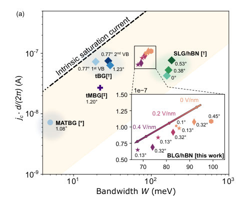
<figcaption class="paper-figure-caption"><b>Fig 3.</b> Figure 3: (a) Critical current vs bandwidth for different moiré superlattices. The experimental critical currents are extracted from jc at n/n0 = −0.5 for the available data in the literature: † from Berdyugin et al. [13], ‡ Barrier [29], ∗Tian et al. [14]. The currents are normalized by BZ size 2π/d to isolate the bandwidth dependence according to Eq. 4. Bandwidths for all the samples are calculated using the continuum model. The dashed black line represents the maximum current limit according to Eq. 4. Inset: Same as main panel, but for the different BLG/hBN superlattices measured in this work, different colors correspond to the same device measured at different displacement fields...</figcaption>
</figure>
<figure class="paper-figure-card">
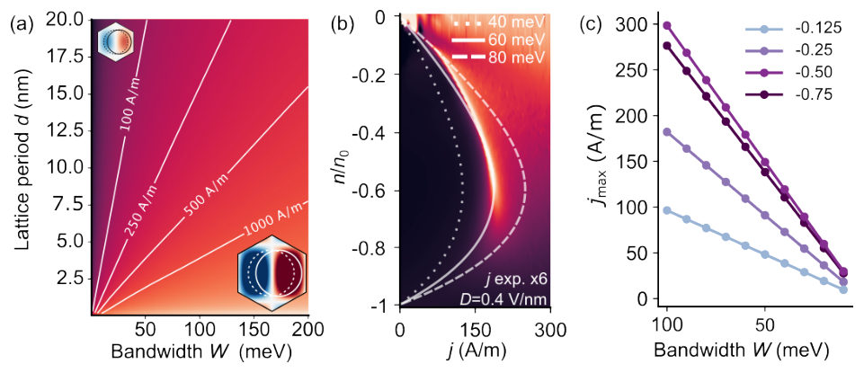
<figcaption class="paper-figure-caption"><b>Fig 4.</b> Figure 4: (a) Schematic illustration of the maximum current in a miniband, which grows with bandwidth W and decreases with d. The insets show the BZ corresponding to small and large moiré period, colored with the band velocity vkx and the shifted fermi surface along the field direction. (b) The different lines represent the density dependence of the maximum current obtained from the model, displaying arc-like structures similar to the experimental dV/dI peaks. The colormap shows the same data as in the lower panel in Figure 2b, with the experimental current multiplied by a factor 6 to show the qualitative agreement with the model for W = 60 meV. (c) Bandwidth dependence of the critical...</figcaption>
</figure>
</div>

<p><strong>Summary.</strong> The research demonstrates that the critical current limiting high-current transport in moiré superlattices scales universally and linearly with the electronic miniband bandwidth. By measuring this breakdown current electrically, researchers can access information about the band structure evolution—a key parameter governing correlated phases—in a fast and accessible manner.</p>
<p><strong>Why it may be interesting.</strong> This work connects macroscopic electrical measurements (high-current breakdown) directly to fundamental quantum mechanical parameters (band structure), providing a novel, non-spectroscopic diagnostic tool for probing correlated electronic states in 2D materials.</p>
<details>
<summary>Detailed structure</summary>
<p><strong>Main problem.</strong> To establish a fundamental link between the electronic bandwidth of moiré minibands and the critical current (j_c) governing out-of-equilibrium transport in these systems.</p>
<p><strong>Main result.</strong> The critical current j_c exhibits a universal, direct scaling relationship with the electronic miniband bandwidth (W), establishing high-current non-linear transport as an accessible electrical probe for measuring band structure evolution.</p>
<p><strong>Method.</strong> Combining experimental four-probe resistance measurements at low bias with differential resistance (dV/dI) measurements in the high-current, out-of-equilibrium regime. Theoretical modeling uses Boltzmann transport equations to derive scaling laws.</p>
<p><strong>Model / system.</strong> The study focuses on moiré superlattices formed by bilayer graphene aligned to hexagonal boron nitride (hBN). The system is electrically tuned using an out-of-plane displacement field (D), which controls the miniband bandwidth and gap opening.</p>
<p><strong>Key observables.</strong> Critical current density (j_c) measured via sharp peaks in dV/dI; Miniband Bandwidth (W); Resistance vs. carrier density (n).</p>
<p><strong>Important parameters / regimes.</strong> Displacement field (D); Carrier density (n/n_0); Temperature ($\sim 10$ K); The scaling constant relating j_c and W.</p>
<p><strong>Assumptions / limitations.</strong> The high-current transport regime is governed by a bandwidth-limited saturation mechanism, which can be modeled analytically using the Boltzmann equation in the relaxation-time approximation.</p>
<p><strong>Figures summary.</strong> Figures show how D tunes gap opening (Fig 1b) and reveal sharp peaks defining j_c vs. current density (Fig 1d). Further figures map out criticality arcs and confirm the universal scaling of j_c with W across different moiré platforms.</p>
<p><strong>Paper structure.</strong> The paper progresses from observing nonlinear transport features in dV/dI maps to developing a minimal analytical model for maximum sustainable current, culminating in demonstrating that this critical current scales universally with the calculated miniband bandwidth.</p>
</details>
<details>
<summary>Abstract</summary>
<p>Moiré superlattices host narrow minibands whose bandwidth governs correlated and topological phases. Here, we demonstrate that the bandwidth also sets the critical current for the onset of out-of-equilibrium transport. In bilayer graphene aligned to hexagonal boron nitride, we explore the high-current transport regime as we continuously flatten the valence miniband using an out-of-plane displacement field. We observe a significant reduction in the critical current, which is captured by a minimal analytical model and corresponds to the calculated narrowing of the miniband. Moreover, by comparing distinct moiré platforms, we show that the scaling between critical current and bandwidth is a universal feature of graphene superlattices. Our results reveal a direct link between miniband dispersion and high-current transport, and establish this regime as a fast and accessible electrical probe of bandwidth evolution.</p>
</details>
<p><sub><a href="#top">↑ back to top</a></sub></p>

<p><a id="paper-2607.00398"></a></p>
<h3 id="holographic-quantum-transformer-a-generalist-neuro-symbolic-architecture-for-solving-frustrated-systems-via-generative-attention"><a href="http://arxiv.org/abs/2607.00398v1">Holographic Quantum Transformer: A Generalist Neuro-Symbolic Architecture for Solving Frustrated Systems via Generative Attention</a></h3>
<p><strong>Authors:</strong> Xingran Guo, Tiaojie Xiao, Jie Liu, Keqin Li<br>
<strong>Type:</strong> both · <strong>Category:</strong> strongly correlated electrons · <strong>PDF:</strong> <a href="https://arxiv.org/pdf/2607.00398v1">https://arxiv.org/pdf/2607.00398v1</a><br>
<strong>Analysis basis:</strong> full PDF text, analyzed in chunks
<strong>Topic relevance:</strong> 🔥 <code>analog quantum simulation</code> <strong>4/5</strong> · <code>exotic spin models in light-matter</code> <strong>3/5</strong> · <code>entanglement &amp; information structure</code> <strong>2/5</strong> · <code>methods for driven-dissipative</code> <strong>1/5</strong> · <code>non-equilibrium dynamics</code> <strong>1/5</strong></p>
<div class="figure-strip-hint">↔ Scroll figures horizontally</div>
<div class="paper-figures-scroll">
<figure class="paper-figure-card">
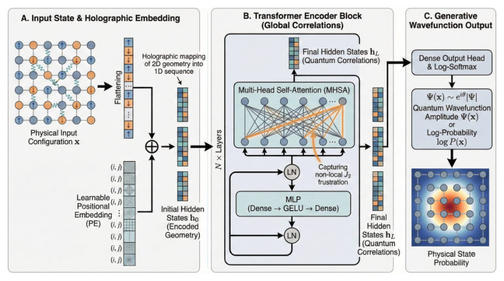
<figcaption class="paper-figure-caption"><b>Fig 1.</b> Figure 1: Overview of HQT. (A) Holographic Embedding injects geometry. (B) Quantum Encoder uses global attention to resolve frustration (𝐽2). (C) Autoregressive Head generates the wavefunction Ψ(x).</figcaption>
</figure>
<figure class="paper-figure-card">

<figcaption class="paper-figure-caption"><b>Fig 2.</b> Figure 2: Detecting Quantum Phase Transitions on the 8 × 8 Lattice. (a) The energy per site (𝐸/𝑁) reaches its least negative value and the variance 𝜎2 𝐸/𝑁shows a relative spike at the critical point 𝐽2 = 0.5, signaling maximal frustration and optimization landscape ruggedness. (b) The crossing of the Néel structure factor 𝑆(𝜋, 𝜋) and the Stripe structure factor 𝑆(𝜋, 0) physically confirms the transition from the Néel phase to a highly frustrated critical phase.</figcaption>
</figure>
<figure class="paper-figure-card">
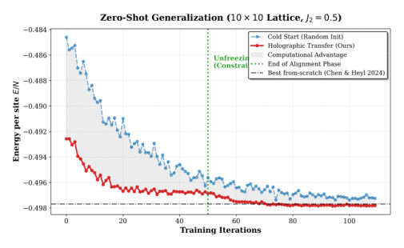
<figcaption class="paper-figure-caption"><b>Fig 3.</b> Figure 3: Zero-Shot Size Extrapolation via Holographic Trans- fer (8 × 8 →10 × 10). The red curve (Holographic Transfer) shows rapid alignment and improved stability relative to the Cold Start baseline (blue). After unfreezing the backbone (Iter 50), the transfer model converges to 𝐸/𝑁≈−0.49782, improving over the Cold Start baseline (−0.4974) and reach- ing a value statistically consistent with the best reported from-scratch result (−0.4976921(4) [3]). This indicates that the holographic prior provides a high-fidelity initialization and helps the model avoid poor local minima even in a sub- stantially expanded Hilbert space.</figcaption>
</figure>
<figure class="paper-figure-card">
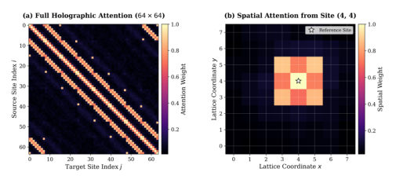
<figcaption class="paper-figure-caption"><b>Fig 4.</b> Figure 4: Holographic Attention Maps on the 8×8 Lattice (𝐽2 = 0.5). (a) The full 64 × 64 attention matrix exhibits distinct off- diagonal stripes, indicating that the model has autonomously learned the 2D topology and periodic boundary conditions (PBC) from flattened 1D sequences. (b) The spatial attention distribution relative to the central reference site (white star). The highest intensities are autonomously assigned to the diagonal sites (distance √</figcaption>
</figure>
</div>

<p><strong>Summary.</strong> The paper introduces the Holographic Quantum Transformer (HQT), an AI architecture designed to solve quantum many-body problems like the frustrated Heisenberg model. HQT uses global self-attention and incorporates physical priors to overcome the sign problem inherent in these simulations. Its key breakthrough is 'Holographic Transfer,' allowing accurate simulation on larger lattices without requiring full retraining.</p>
<p><strong>Why it may be interesting.</strong> This work directly tackles a major bottleneck in condensed matter theory—simulating strongly correlated systems—by integrating advanced AI techniques with fundamental physical constraints, offering a scalable path beyond traditional numerical methods.</p>
<details>
<summary>Detailed structure</summary>
<p><strong>Main problem.</strong> Simulating two-dimensional frustrated quantum matter, such as the J1-J2 Heisenberg model, is computationally intractable due to the sign problem and exponential Hilbert space complexity.</p>
<p><strong>Main result.</strong> The Holographic Quantum Transformer (HQT) achieves high-fidelity ground state energy estimates for frustrated lattices, notably demonstrating a zero-shot size extrapolation capability that rivals state-of-the-art methods without retraining.</p>
<p><strong>Method.</strong> It employs a physics-inspired generative attention architecture that decomposes the wavefunction amplitude while injecting physical constraints like the Marshall-Peierls sign rule and utilizing global self-attention to capture long-range entanglement.</p>
<p><strong>Model / system.</strong> The system studied is the 2D antiferromagnetic J1-J2 Heisenberg model on a square lattice, characterized by the Hamiltonian H = J1 * sum(nearest) + J2 * sum(next-nearest). The focus is on highly frustrated regimes near quantum critical points.</p>
<p><strong>Key observables.</strong> Ground-state energy per site (E/N), attention maps revealing underlying interaction geometry, and low autocorrelation time ($  au &lt; 0.01$).</p>
<p><strong>Important parameters / regimes.</strong> Frustration parameter J2, particularly at the quantum critical point J2 = 0.5; lattice sizes ranging from $8 	imes 8$ to $10 	imes 10$.</p>
<p><strong>Assumptions / limitations.</strong> The architecture assumes that global self-attention can effectively model complex entanglement patterns and proposes a zero-shot transfer protocol based on bilinear interpolation of positional embeddings.</p>
<p><strong>Figures summary.</strong> Figures illustrate the HQT attention maps, showing correlations aligning with physical interactions (like J2 diagonals), and demonstrate the successful extrapolation of results from smaller to larger lattices.</p>
<p><strong>Paper structure.</strong> The paper introduces the HQT architecture by addressing the sign problem in quantum simulation. It details the mathematical formulation using autoregressive decomposition and self-attention. The core contribution is presented via 'Holographic Transfer,' demonstrating zero-shot size generalization, followed by benchmarking against known physical regimes (e.g., phase transitions).</p>
</details>
<details>
<summary>Abstract</summary>
<p>Simulating two-dimensional frustrated quantum matter is a grand challenge due to the sign problem and exponential Hilbert space complexity. In this work, we introduce the Holographic Quantum Transformer (HQT), a physics-inspired generative architecture that leverages global self-attention to resolve non-local entanglement patterns. We validate HQT on the square lattice $J_1-J_2$ Heisenberg model. On the heavily frustrated $8 \times 8$ lattice at the quantum critical point ($J_2=0.5$), HQT reaches a ground-state energy per site ($E/N$) of $\mathbf{-0.5001(1)}$, consistent with the expected finite-size scaling trend. Beyond numerical accuracy, HQT exhibits intrinsic physical awareness, autonomously recovering the underlying $J_2$ interaction geometry through interpretable attention maps. Our central contribution is ``Holographic Transfer", a zero-shot size-extrapolation protocol with rapid alignment: a model trained on $8 \times 8$ systems is directly projected onto larger $10 \times 10$ lattices via continuous positional-embedding interpolation and head re-initialization, achieving high-fidelity initialization and rapid convergence. This zero-shot protocol yields an energy of $E/N = \mathbf{-0.49782(3)}$, statistically consistent with the variational state of the art while requiring no from-scratch training on the target lattice. Our results establish generative attention as a scalable paradigm for transferable quantum simulation.</p>
</details>
<p><sub><a href="#top">↑ back to top</a></sub></p>

<p><a id="paper-2607.00229"></a></p>
<h3 id="production-of-magic-states-via-math249math-bosons-and-dark-photons"><a href="http://arxiv.org/abs/2607.00229v1">Production of Magic States via $Z$ Bosons and Dark Photons</a></h3>
<p><strong>Authors:</strong> Carlos Alvarado, Alfredo Aranda, César Bonilla, Yahir Lua, Ethan Rodríguez-Martínez<br>
<strong>Type:</strong> theory · <strong>Category:</strong> other · <strong>PDF:</strong> <a href="https://arxiv.org/pdf/2607.00229v1">https://arxiv.org/pdf/2607.00229v1</a><br>
<strong>Analysis basis:</strong> full PDF text, analyzed in chunks
<strong>Topic relevance:</strong> 🔥 <code>entanglement &amp; information structure</code> <strong>4/5</strong> · <code>Keldysh / 2PI / non-Gaussian methods</code> <strong>1/5</strong> · <code>analog quantum simulation</code> <strong>1/5</strong> · <code>correlated / nonlocal dissipation</code> <strong>1/5</strong> · <code>driven-dissipative phase transition</code> <strong>1/5</strong> · <code>methods for driven-dissipative</code> <strong>1/5</strong> · <code>non-equilibrium dynamics</code> <strong>1/5</strong> · <code>non-equilibrium universality</code> <strong>1/5</strong></p>
<div class="figure-strip-hint">↔ Scroll figures horizontally</div>
<div class="paper-figures-scroll">
<figure class="paper-figure-card">
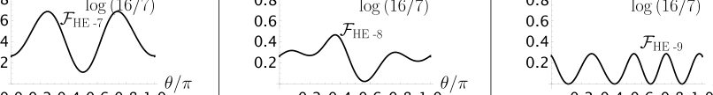
<figcaption class="paper-figure-caption"><b>Fig 1.</b> FIG. 2. Angular dependence of the magic distributions obtained from Mγ + MZ under Møller</figcaption>
</figure>
<figure class="paper-figure-card">

<figcaption class="paper-figure-caption"><b>Fig 2.</b> FIG. 3. Angular dependence of the magic distributions obtained from Mγ + MZ under Bhabha</figcaption>
</figure>
<figure class="paper-figure-card">

<figcaption class="paper-figure-caption"><b>Fig 3.</b> FIG. 4. Angular dependence of the magic distributions obtained from Mγ + MZ under elastic</figcaption>
</figure>
<figure class="paper-figure-card">
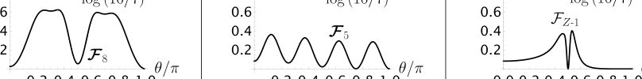
<figcaption class="paper-figure-caption"><b>Fig 4.</b> FIG. 6. Angular dependence of the magic distributions obtained from Mγ + MZ under pair</figcaption>
</figure>
<figure class="paper-figure-card">
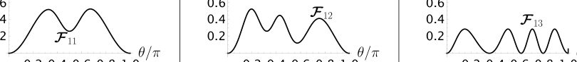
<figcaption class="paper-figure-caption"><b>Fig 5.</b> FIG. 7. Angular dependence of the magic distributions obtained from Mγ + MZ under Møller</figcaption>
</figure>
</div>

<p><strong>Summary.</strong> This work explores how incorporating electroweak or dark photon interactions modifies the 'magic' character of quantum states produced in high-energy particle collisions. By calculating the second stabilizer Rényi entropy, the authors demonstrate that these new forces generate unique magic distribution functions across various scattering processes. This provides a powerful diagnostic tool for searching for physics beyond the Standard Model.</p>
<p><strong>Why it may be interesting.</strong> While focused on particle physics phenomenology, the core mathematical tool—quantifying deviations from classical simulability using entanglement measures like Rényi entropy—is a concept relevant to understanding quantum resource theories in AMO physics.</p>
<details>
<summary>Detailed structure</summary>
<p><strong>Main problem.</strong> The study investigates how including electroweak (Z-boson) or dark photon ($A'$) exchange modifies the 'magic state' character of quantum states produced in high-energy particle scattering processes.</p>
<p><strong>Main result.</strong> The inclusion of these new interactions generates novel magic distribution functions and reorganizes stabilizer classes, with Bhabha scattering showing particularly rich structure compared to pure QED predictions.</p>
<p><strong>Method.</strong> The analysis uses the stabilizer formalism and quantifies 'magic' using the second stabilizer Rényi entropy ($M_2$) across various kinematic regimes (low-energy, high-energy, Z-resonance).</p>
<p><strong>Model / system.</strong> The models analyzed are extensions of the Standard Model: 1) The full Electroweak sector ($\gamma$ and $Z$ exchange); 2) A dark U(1) extension featuring a massive mediator ($A'$) and a charged dark fermion ($\chi$). Processes include Møller, Bhabha, and pair annihilation.</p>
<p><strong>Key observables.</strong> Magic distribution functions ($F_{n,i}$, $H(\lambda_\chi, 	heta)$), the second stabilizer Rényi entropy ($M_2$), and the maximum magic value ($ ext{M2}_{\max}$).</p>
<p><strong>Important parameters / regimes.</strong> Energy regimes (low-energy limit, high-energy limit, Z-resonance); mass ratios like $m_f/m_\chi$ or $m_{A'}/m_\chi$.</p>
<p><strong>Assumptions / limitations.</strong> The analysis relies on perturbative expansions in various parameters ($\lambda_Z$, $\mu_D$) and approximations for the propagators in different energy limits.</p>
<p><strong>Figures summary.</strong> Figures illustrate the angular dependence of magic distributions ($M_2(	heta)$) comparing QED, high-energy EW, and Z-resonance regimes for processes like pair annihilation and Møller scattering. Tables summarize the specific functional forms and associated stabilizer classes.</p>
<p><strong>Paper structure.</strong> The paper is structured to first analyze the Electroweak sector (EW), then examine fixed stabilizer states, followed by the Dark U(1) extension, concluding with detailed comparisons across different energy regimes and processes.</p>
</details>
<details>
<summary>Abstract</summary>
<p>The production of magic states is studied in two settings. The first is the electroweak (EW) sector of the Standard Model (SM). The second is an extension featuring a new broken $U(1)$ gauge symmetry and a Dirac fermion charged under it. This setup resembles a dark $U(1)$ scenario, with the additional fermion playing the role of a dark matter candidate that annihilates into SM particles through its coupling to the new gauge boson. In the EW sector, the low-energy regime reproduces earlier magic production results obtained for Quantum Electrodynamics, whereas the high-energy and $Z$-resonance regimes generate new magic distribution functions and non-trivially reorganize the stabilizer state classes, with Bhabha scattering exhibiting the strongest sensitivity to electroweak effects. Also, a subset of fixed stabilizer states is identified, for which the magic distributions remain unchanged across the different energy regimes. In the dark sector, the main effect of the new massive mediator is the appearance of new magic distributions functions for Moller-like, Bhabha-like, and inverse pair-annihilation processes in the low-energy limit. These reach the maximal magic value at the SM-to-dark fermion mass ratios $m_f/m_χ\to 0$ and $m_f/m_χ\to 1.83929$.</p>
</details>
<p><sub><a href="#top">↑ back to top</a></sub></p>

<p><a id="paper-2607.00735"></a></p>
<h3 id="experimental-quantification-of-layered-error-suppression-in-fiber-interconnected-quantum-data-centers"><a href="http://arxiv.org/abs/2607.00735v1">Experimental Quantification of Layered Error Suppression in Fiber-Interconnected Quantum Data Centers</a></h3>
<p><strong>Authors:</strong> Seyed Navid Elyasi, Sima Bahrani, Rui Wang, Dimitra Simeonidou, Paolo Monti, Rui Lin<br>
<strong>Type:</strong> experiment · <strong>Category:</strong> quantum information and computing · <strong>PDF:</strong> <a href="https://arxiv.org/pdf/2607.00735v1">https://arxiv.org/pdf/2607.00735v1</a><br>
<strong>Analysis basis:</strong> full PDF text, analyzed in chunks
<strong>Topic relevance:</strong> 🔥 <code>QC/QI experiment</code> <strong>4/5</strong> · <code>quantum measurements</code> <strong>2/5</strong> · <code>correlated / nonlocal dissipation</code> <strong>1/5</strong> · <code>entanglement &amp; information structure</code> <strong>1/5</strong> · <code>methods for driven-dissipative</code> <strong>1/5</strong> · <code>non-equilibrium dynamics</code> <strong>1/5</strong></p>
<div class="figure-strip-hint">↔ Scroll figures horizontally</div>
<div class="paper-figures-scroll">
<figure class="paper-figure-card">
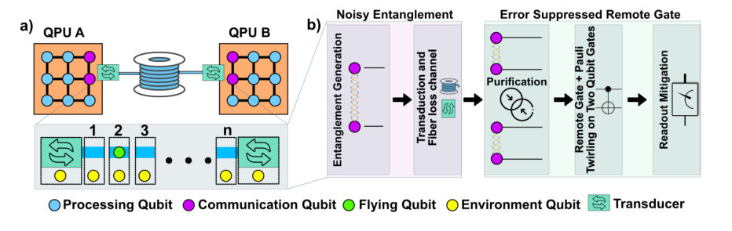
<figcaption class="paper-figure-caption"><b>Fig 1.</b> Fig. 1: (a) Fiber-interconnected superconducting QPUs with a transduction interface, where communication noise is emulated via a quantum collisional model. (b) Protocol layers including entanglement generation, noisy transmission, purification, Pauli-twirled two-qubit gates, and readout mitigation. Colors indicate qubit roles and system components.</figcaption>
</figure>
<figure class="paper-figure-card">
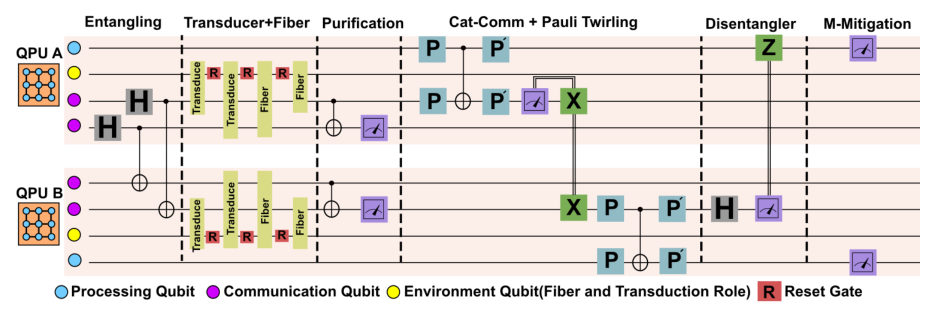
<figcaption class="paper-figure-caption"><b>Fig 2.</b> Fig. 2: Circuit-level implementation of the proposed error suppression framework. A Bell pair is distributed through a collisional communication channel modeling transduction and fiber noise. Entanglement purification is applied to improve resource fidelity, followed by remote gate execution using a cat-state protocol with Pauli-twirled two-qubit gates. Final measurement outcomes are corrected using readout mitigation.</figcaption>
</figure>
<figure class="paper-figure-card">

<figcaption class="paper-figure-caption"><b>Fig 3.</b> Fig. 3: Remote gate performance across increasing collisional-model fiber steps, with the monolithic noiseless case shown as Mono. (a) Quality of the distributed entanglement, quantified by the Bell-state fidelity. (b) Fidelity of |00⟩for a remote CNOT with the control qubit prepared in |0⟩. (c) Fidelity of |11⟩for control prepared in |1⟩.</figcaption>
</figure>
</div>

<p><strong>Summary.</strong> This paper experimentally quantifies error suppression techniques necessary for scaling quantum computation using interconnected superconducting QPUs. By implementing a layered strategy combining entanglement purification and Pauli twirling, the researchers achieved over 20% fidelity improvement in remote operations under realistic fiber noise. This work is crucial for realizing robust, distributed Quantum Data Centers.</p>
<p><strong>Why it may be interesting.</strong> This work provides concrete experimental validation for advanced resource management techniques in distributed quantum computing architectures, directly relevant to scaling up quantum networks beyond single-device limitations.</p>
<details>
<summary>Detailed structure</summary>
<p><strong>Main problem.</strong> The primary challenge addressed is overcoming scalability limits in quantum computation by enabling distributed processing across interconnected Quantum Data Centers (QDCs) linked via optical fibers.</p>
<p><strong>Main result.</strong> The authors demonstrated that a layered error suppression strategy, combining entanglement purification, Pauli twirling, and readout mitigation, can improve operational fidelity by over 20% under realistic communication noise conditions.</p>
<p><strong>Method.</strong> They employed an experimental protocol involving three sequential error correction/mitigation steps: probabilistic entanglement purification, applying Pauli twirling to gates, and correcting measurement biases via the assignment matrix.</p>
<p><strong>Model / system.</strong> The experiment uses fiber-interconnected superconducting QPUs (tested on an IBM backend) where communication noise is modeled using a quantum collisional model Hamiltonian. The system involves two QPUs linked by a transduction interface and an optical fiber link.</p>
<p><strong>Key observables.</strong> Bell-state fidelity, fidelity of remote CNOT gates ($|00
angle$ and $|11
angle$), and overall operational fidelity as a function of the number of communication steps.</p>
<p><strong>Important parameters / regimes.</strong> The performance decay is tracked against increasing collisional steps (noise levels), with key thresholds being the baseline fidelity ($\sim 0.97$) versus purified/mitigated fidelity ($\sim 0.63$ at step 10).</p>
<p><strong>Assumptions / limitations.</strong> The noise emulation assumes a Markovian process after environment qubit resetting, and the overall protocol is probabilistic due to entanglement purification success rates.</p>
<p><strong>Figures summary.</strong> Figures illustrate the QDC architecture (Fig. 1a), detail the layered error suppression protocol (Fig. 1b &amp; 2), and summarize performance decay versus collisional steps, showing significant fidelity recovery with mitigation techniques (Fig. 3).</p>
<p><strong>Paper structure.</strong> The paper first establishes the physical setup of interconnected QPUs; it then details the theoretical framework using the quantum collisional model; subsequently, it implements and compares baseline vs. layered error suppression protocols (purification $    o$ twirling $   o$ readout mitigation) across increasing noise levels.</p>
</details>
<details>
<summary>Abstract</summary>
<p>We perform experiments to quantify error suppression in fiber-connected superconducting QPUs using combined error mitigation techniques, demonstrating over 20\% improvement in operational fidelity across interconnected quantum processing units under realistic noise conditions.</p>
</details>
<p><sub><a href="#top">↑ back to top</a></sub></p>

<p><a id="paper-2607.00797"></a></p>
<h3 id="hierarchy-of-hidden-nonlocality-a-genuine-activation-of-incompletability"><a href="http://arxiv.org/abs/2607.00797v1">Hierarchy of hidden nonlocality: A genuine activation of Incompletability</a></h3>
<p><strong>Authors:</strong> Soumajit Das, Shampa Mondal, Preeti Parashar, Atanu Bhunia<br>
<strong>Type:</strong> theory · <strong>Category:</strong> other · <strong>PDF:</strong> <a href="https://arxiv.org/pdf/2607.00797v1">https://arxiv.org/pdf/2607.00797v1</a><br>
<strong>Analysis basis:</strong> full PDF text, analyzed in chunks
<strong>Topic relevance:</strong> 🔥 <code>entanglement &amp; information structure</code> <strong>4/5</strong> · <code>quantum measurements</code> <strong>2/5</strong> · <code>Keldysh / 2PI / non-Gaussian methods</code> <strong>1/5</strong> · <code>correlated / nonlocal dissipation</code> <strong>1/5</strong> · <code>driven-dissipative phase transition</code> <strong>1/5</strong> · <code>methods for driven-dissipative</code> <strong>1/5</strong></p>
<div class="figure-strip-hint">↔ Scroll figures horizontally</div>
<div class="paper-figures-scroll">
<figure class="paper-figure-card">

<figcaption class="paper-figure-caption"><b>Fig 1.</b> FIG. 1: Schematic illustration of the proposed transformation. A LOCC distinguishable, completable set of product state is trans- formed into a strictly incompletable, LOCC-indistinguishable set, si- multaneously activating incompletability and nonlocality.</figcaption>
</figure>
<figure class="paper-figure-card">
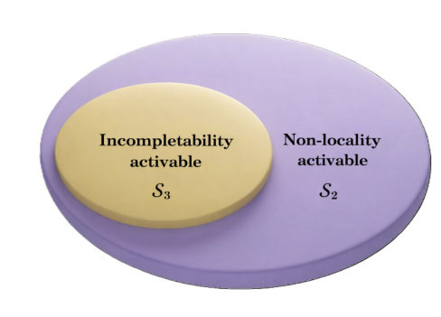
<figcaption class="paper-figure-caption"><b>Fig 2.</b> FIG. 2: Hierarchy between activation of nonlocality and activation of incompletability. Every incompletability activable set is nonlocality activable, while the converse does not hold in general.</figcaption>
</figure>
</div>

<p><strong>Summary.</strong> This work establishes a rigorous hierarchy among three concepts: activation of nonlocality, activation of incompletability, and their relationship to quantum coherence. By showing that the ability to activate incompleteness is a strictly stronger condition than activating nonlocality, it refines our understanding of how local operations constrain global quantum correlations.</p>
<p><strong>Why it may be interesting.</strong> It provides deep theoretical insights into the operational boundaries of quantum information, particularly how local measurements constrain global properties like entanglement and nonlocality in ways that are quantifiable through incompleteness.</p>
<details>
<summary>Detailed structure</summary>
<p><strong>Main problem.</strong> The paper investigates the relationship between local distinguishability of quantum states, incompletability, coherence, and nonlocality by introducing the concept of 'activation of incompletability.'</p>
<p><strong>Main result.</strong> A strict hierarchy is established: activation of incompleteness implies activation of nonlocality, but the reverse implication fails. This reveals a fundamental interplay between local distinguishability and quantum resource properties.</p>
<p><strong>Method.</strong> The analysis uses theoretical constructions involving sets of orthogonal product states in bipartite systems ($\mathbb{C}^{d_1} \otimes \mathbb{C}^{d_2}$), analyzing transformations under Local Operations and Classical Communication (LOCC) and LICC.</p>
<p><strong>Model / system.</strong> The focus is on abstract quantum information theory applied to sets of orthogonal quantum states in bipartite Hilbert spaces. The operational framework involves LOCC, LICC, and the concept of local distinguishability versus incompleteness.</p>
<p><strong>Key observables.</strong> Local Distinguishability (by LOCC), Incompletability, Nonlocality, Quantum Coherence (quantified via relative entropy).</p>
<p><strong>Important parameters / regimes.</strong> The dimensionality of the bipartite system ($d_1 	imes d_2$) and the operational constraints imposed by LOCC/LICC.</p>
<p><strong>Assumptions / limitations.</strong> The analysis heavily relies on established results concerning product states, Bell states, and Unextendable Product Bases (UPBs).</p>
<p><strong>Figures summary.</strong> Figures illustrate the transformation of initially well-behaved sets into strictly incompletable sets, demonstrating the hierarchy where Incompleteness Activation $\implies$ Nonlocality Activation.</p>
<p><strong>Paper structure.</strong> The paper progresses by defining preliminaries, presenting examples of nonlocality activation, analyzing incompletability activation, investigating connections via LICC, and concluding with a characterization theorem linking coherence to these phenomena.</p>
</details>
<details>
<summary>Abstract</summary>
<p>Quantum nonlocality admits several operational manifestations, one of which emerges from sets of orthogonal quantum states that cannot be perfectly distinguished by local operations and classical communication (LOCC). Such sets are regarded as nonlocal because their perfect discrimination requires global measurements. In contrast, sets that are perfectly distinguishable by LOCC are generally considered locally accessible and operationally classical. In this work, we investigate the role of incompletability in local state discrimination and introduce the notion of \emph{activation of incompletability}. Specifically, we demonstrate the existence of orthogonal sets that are initially perfectly distinguishable by LOCC and free from local redundancy, but which can be transformed via LOCC into strictly incompletable sets. We prove that activation of incompletability necessarily implies activation of nonlocality, whereas the converse fails in general, thereby establishing a hierarchy between the two activation phenomena. Furthermore, within the framework of local incoherent operations and classical communication (LICC), we show that any set whose incompletability can be activated can nevertheless be extended to a complete orthonormal basis of the Hilbert space, although the resulting completed basis is no longer perfectly distinguishable by LOCC. Our results uncover a fundamental interplay among local distinguishability, incompletability, coherence, and nonlocality, and provide new insight into the structure of locally accessible quantum information.</p>
</details>
<p><sub><a href="#top">↑ back to top</a></sub></p>

<p><a id="paper-2607.00600"></a></p>
<h3 id="influence-of-laser-chirp-and-interferometer-delay-and-imbalance-on-the-performance-of-a-time-bin-bb84-quantum-key-distribution-system"><a href="http://arxiv.org/abs/2607.00600v1">Influence of laser chirp and interferometer delay and imbalance on the performance of a time-bin BB84 quantum key distribution system</a></h3>
<p><strong>Authors:</strong> Loïc Millet, Alberto Boaron, Rob Thew, Gianluca Boso<br>
<strong>Type:</strong> both · <strong>Category:</strong> quantum information and computing · <strong>PDF:</strong> <a href="https://arxiv.org/pdf/2607.00600v1">https://arxiv.org/pdf/2607.00600v1</a><br>
<strong>Analysis basis:</strong> full PDF text, analyzed in chunks
<strong>Topic relevance:</strong> 🔥 <code>quantum optics experiment</code> <strong>4/5</strong> · <code>interference shaping light</code> <strong>3/5</strong> · <code>QC/QI experiment</code> <strong>1/5</strong> · <code>methods for driven-dissipative</code> <strong>1/5</strong></p>
<div class="figure-strip-hint">↔ Scroll figures horizontally</div>
<div class="paper-figures-scroll">
<figure class="paper-figure-card">
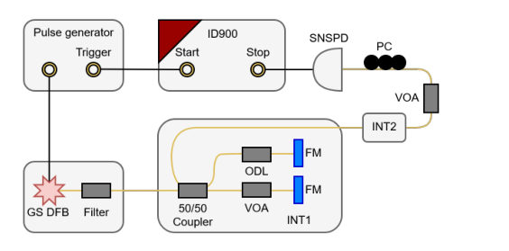
<figcaption class="paper-figure-caption"><b>Fig 1.</b> FIG. 2. Schematic of the visibility measurement setup. GS DFB: gain-switched distributed feedback laser. INT: interferometer. ODL: optical delay line. VOA: variable optical attenuator. FM: Fara- day mirror. PC: polarization controller. SNSPD: superconducting nanowire single photon detector.</figcaption>
</figure>
<figure class="paper-figure-card">

<figcaption class="paper-figure-caption"><b>Fig 2.</b> FIG. 1. Maximum attenuation achievable with a secret key rate (SKR) higher than 100 bps (red dashed line) and SKR at 0 dB nor- malized by the SKR achieved with a visibility of 1 (blue line) as a function of the system visibility at 0 dB.</figcaption>
</figure>
<figure class="paper-figure-card">

<figcaption class="paper-figure-caption"><b>Fig 3.</b> FIG. 3. (a) Experimental visibility contour plot as a function of im- balance and delay. (b) Analytically calculated visibility contour plot of an unchirped Gaussian laser pulse.</figcaption>
</figure>
<figure class="paper-figure-card">

<figcaption class="paper-figure-caption"><b>Fig 4.</b> FIG. 4. Schematic of the PROUD measurement setup using a polar- ization Mach-Zehnder interferometer. GS DFB: gain-switched dis- tributed feedback laser. PC: polarization controller. PMF: polariza- tion maintaining fiber. PBS: polarizing beam splitter.</figcaption>
</figure>
<figure class="paper-figure-card">
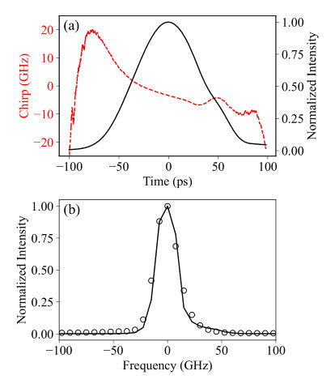
<figcaption class="paper-figure-caption"><b>Fig 5.</b> FIG. 5. (a) Measured chirp (red dashed line) and intensity (black continuous line) of the optical source. (b) Comparison between the reconstructed spectrum (black dots) and measured spectrum (black continuous line) of the optical source.</figcaption>
</figure>
</div>

<p><strong>Summary.</strong> This paper analyzes the performance limitations of a time-bin BB84 QKD system by modeling the effects of interferometer delay, imbalance, and laser chirp. The key finding is that laser chirp introduces substantial visibility loss, significantly degrading the achievable secret key rate beyond what simple optical imperfections predict. This highlights the critical need for precise characterization and mitigation of spectral phase noise in quantum communication hardware.</p>
<p><strong>Why it may be interesting.</strong> This work is highly relevant to quantum optics and open quantum systems as it provides concrete experimental characterization of decoherence mechanisms (chirp) in practical photonic quantum communication protocols, moving beyond idealized models.</p>
<details>
<summary>Detailed structure</summary>
<p><strong>Main problem.</strong> The study investigates how imperfections like interferometer delay, imbalance, and laser chirp degrade the performance of a time-bin BB84 quantum key distribution (QKD) system.</p>
<p><strong>Main result.</strong> Laser chirp causes significant visibility degradation in the QKD system, leading to a more severe reduction in the Secret Key Rate than accounted for by simple intensity imbalance or delay effects alone.</p>
<p><strong>Method.</strong> The authors combine simulation of 2-decoy state BB84 with experimental measurement techniques like ultrafast optical differentiation (PROUD) to quantify visibility degradation.</p>
<p><strong>Model / system.</strong> The system is a time-bin BB84 QKD protocol using pulsed light from a DFB laser diode. The analysis models the interference visibility ($V$) as a function of delay ($   au$), intensity imbalance ($\eta$), and chirp coefficient ($eta$).</p>
<p><strong>Key observables.</strong> Secret Key Rate (SKR), Interference Visibility ($V$), Intensity Imbalance ($\eta$), Chirp Coefficient ($eta$)</p>
<p><strong>Important parameters / regimes.</strong> Relative time delay ($  au$), Intensity imbalance ($\eta$), Laser chirp ($\Delta\omega$ or $eta$) parameters.</p>
<p><strong>Assumptions / limitations.</strong> The analysis assumes that the degradation due to laser chirp is significant and must be accounted for beyond simple geometric/intensity imperfections. The PROUD setup relies on specific filtering techniques for measurement.</p>
<p><strong>Figures summary.</strong> Figures show SKR vs. visibility, schematic setups for measuring visibility (delay/imbalance) and chirp (PROUD), and contour plots illustrating the dependence of visibility on multiple error sources.</p>
<p><strong>Paper structure.</strong> The paper first establishes the importance of high visibility for QKD performance using simulations. It then experimentally measures how delay and imbalance affect visibility, followed by a detailed analysis quantifying the additional degradation caused specifically by laser chirp using advanced optical techniques.</p>
</details>
<details>
<summary>Abstract</summary>
<p>We investigate the effect of interferometer delay and imbalance on the performance of a BB84 time-bin quantum key distribution system. We simulate the impact of interference visibility on system performance and measure the visibility of a pair of interferometers as a function of their relative time delay and intensity imbalance. In addition, our analysis highlights the effect of laser chirp on system performance.</p>
</details>
<p><sub><a href="#top">↑ back to top</a></sub></p>

<p><a id="paper-2607.01227"></a></p>
<h3 id="polynomial-equivalence-of-the-global-transverse-field-ising-model-and-the-gate-model-of-quantum-computation"><a href="http://arxiv.org/abs/2607.01227v1">Polynomial equivalence of the global transverse-field Ising model and the gate model of quantum computation</a></h3>
<p><strong>Authors:</strong> Matthias Werner<br>
<strong>Type:</strong> theory · <strong>Category:</strong> quantum information and computing · <strong>PDF:</strong> <a href="https://arxiv.org/pdf/2607.01227v1">https://arxiv.org/pdf/2607.01227v1</a><br>
<strong>Analysis basis:</strong> full PDF text, analyzed in chunks
<strong>Topic relevance:</strong> 🔥 <code>analog quantum simulation</code> <strong>4/5</strong> · <code>non-equilibrium dynamics</code> <strong>2/5</strong> · <code>Keldysh / 2PI / non-Gaussian methods</code> <strong>1/5</strong> · <code>entanglement &amp; information structure</code> <strong>1/5</strong></p>
<div class="figure-strip-hint">↔ Scroll figures horizontally</div>
<div class="paper-figures-scroll">
<figure class="paper-figure-card">
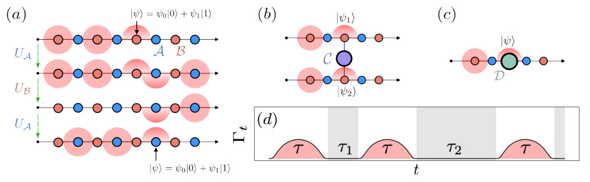
<figcaption class="paper-figure-caption"><b>Fig 1.</b> Figure 1. (a): Basic mechanism of the Cesa-Pichler method [9] to move quantum information along the qubit wires. UA and UB represent X-gates on the respective qubit species A (blue) and B (red), conditional on being blockaded by its neighboring qubits; (b): arrangement for the application of entangling gates, where a 2π-pulse is applied to a qubit of species C (purple); (c): qubit arrangement for the application of single-qubit gates in the Cesa-Pichler method, where the gates are executed when the logical qubit is located on a qubit of species D (green); (d): schedule Γt consisting of a concatenation of Γ-pulses over a time τ (red shaded), in between the Γ-pulses, the system evolves under...</figcaption>
</figure>
<figure class="paper-figure-card">

<figcaption class="paper-figure-caption"><b>Fig 2.</b> Figure 2. Graph G of the universal arrangement proposed by Cesa &amp; Pichler for a system of four logical qubits. The first three qubits (black box) on the left-hand side of each chain serve to initialize the standard configuration, while ev- ery chain has an impurity for single-qubit gates and a con- nection via an impurity to its neighbors for logical two-qubit gates. Then, depending on the order of pulses in the propa- gation cycle, the logical many-body state (red box) can move left and right, so that logical operations on any qubit and be- tween neighboring pairs can be executed. This topology cor- responds to a chain of five logical qubits with nearest-neighbor couplings. Interactions...</figcaption>
</figure>
<figure class="paper-figure-card">
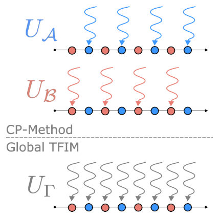
<figcaption class="paper-figure-caption"><b>Fig 3.</b> Figure 3. Illustration of the assumptions of semi-global con- trol as per the Cesa-Pichler method (top) and the global drive due to the transverse field generating Γ-pulses on all qubits simultaneously (bottom).</figcaption>
</figure>
<figure class="paper-figure-card">
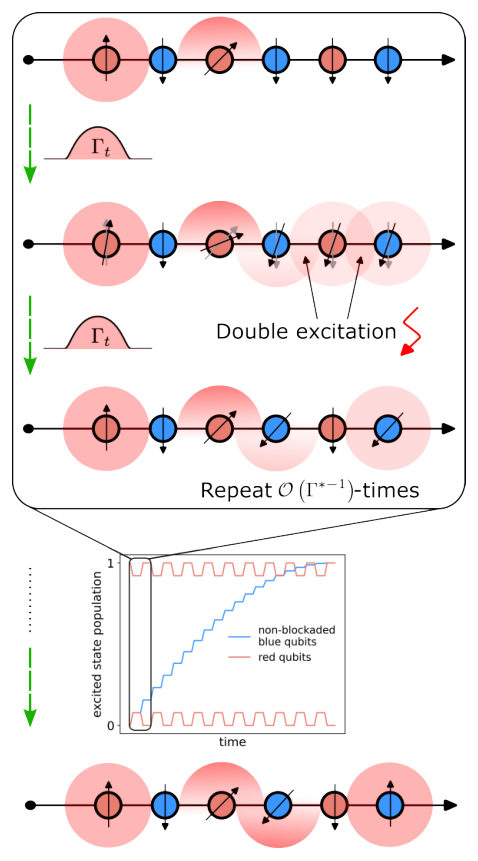
<figcaption class="paper-figure-caption"><b>Fig 4.</b> Figure 4. Illustration of the CP-method with a global drive. The black box in the main figure and the inset correspond to each other. In the CP-method it is assumed that dis- tinct groups of atoms can be driven independently. Here, we only have the ability to apply a transverse field to all qubits at the same time. Therefore, adjacent qubits blockade each other due to the global drive, resulting in errors due to these unwanted blockade interactions. We can recover individual control of non-adjacent qubit groups using specifically cho- sen local Z-fields and exploiting constructive and destructive interference. By appropriately chosen phase-gates between the Γ-pulses, the non-driven qubits...</figcaption>
</figure>
<figure class="paper-figure-card">

<figcaption class="paper-figure-caption"><b>Fig 5.</b> Figure 5. Infidelity 1 −F of a single propagation cycle as shown in Figure 1(a) compiled in global Γ-pulses as a func- tion of the inverse maximal transverse field Γ∗−1 (a) and as a function of the system size (b). The data in (a) is generated with a fixed L = 7, while in (b) we fix the maximal trans- verse field at Γ∗= 0.01. The colors and markers indicate the same J in both figures. J = ∞corresponds to a simulation without blockade Hamiltonian HJ, but instead projected onto the computational subspace P. We can see a clear quadratic decay in (a) consistent with the theoretical prediction, while in (b) the observed scaling is much slower than the predicted worst case. The dashed black line...</figcaption>
</figure>
</div>

<p><strong>Summary.</strong> The paper proves that the global transverse-field Ising model can simulate any arbitrary quantum circuit, establishing polynomial equivalence to the gate model. This is achieved by engineering complex time-dependent driving protocols that effectively mimic local control operations on encoded logical qubits. The result has significant implications for understanding the computational power of analog quantum simulators.</p>
<p><strong>Why it may be interesting.</strong> This work is highly relevant because it provides a concrete physical realization—the global TFIM—that achieves the computational power of universal quantum gates, bridging theoretical models with solid-state/analog platform physics.</p>
<details>
<summary>Detailed structure</summary>
<p><strong>Main problem.</strong> The central question addressed is whether the global transverse-field Ising model (TFIM) with a time-dependent field is computationally equivalent to the universal gate model of quantum computation.</p>
<p><strong>Main result.</strong> The authors affirmatively prove that the global TFIM, under specific non-monotonic driving schedules, is polynomially equivalent to the gate model, establishing its capability for universal quantum simulation.</p>
<p><strong>Method.</strong> The proof involves constructing a sequence of pulses and utilizing techniques like Dyson series expansions and basis transformations (e.g., Schrieffer-Wolff) to simulate arbitrary unitary gates on logical qubits encoded within the physical Ising lattice.</p>
<p><strong>Model / system.</strong> The system is the global transverse-field Ising model, $H_t = \Gamma_t H_X + H_Z$, where $H_Z$ contains local fields and couplings. Logical qubits are encoded on a graph structure using auxiliary impurity qubits (A, B, C, D) to facilitate controlled interactions.</p>
<p><strong>Key observables.</strong> Gate fidelity ($\delta'_{	ext{total}}$), required resource scaling for time ($T$), coupling strength $|J|$, transverse field amplitude $\Gamma^*$, and phase error $\epsilon_{	ext{phase}}$.</p>
<p><strong>Important parameters / regimes.</strong> The equivalence holds under the assumption of polynomial overhead in time, qubit number, and energy scale; specific scalings are derived relating these parameters to achieve a target error $\epsilon$.</p>
<p><strong>Assumptions / limitations.</strong> Key assumptions include working in the limit of weak driving ($\Gamma^* \ll 1$) and controlling errors from both Hamiltonian approximation (related to $\Gamma^*$) and phase accumulation ($\epsilon_{	ext{phase}}$).</p>
<p><strong>Figures summary.</strong> Figures illustrate information propagation along qubit wires using impurity qubits, comparing global drive mechanisms with semi-global control methods.</p>
<p><strong>Paper structure.</strong> The paper builds by first establishing the physical mechanism for implementing basic gates (single-qubit and controlled phase) on encoded logical qubits. It then generalizes this to show that these local operations can be synthesized using only a globally applied, time-dependent transverse field via carefully timed pulse sequences.</p>
</details>
<details>
<summary>Abstract</summary>
<p>The transverse-field Ising model has attracted a lot of attention in recent years, especially in the quantum simulation and quantum computation literature. This interest is driven by many platforms for analog quantum computation, which implement the transverse-field Ising model for solving optimization problems, such as quantum annealing. However, it has remained an open question whether the Ising model with a global transverse field is equivalent to the gate model of quantum computation. Here we answer this question affirmatively for the case of a non-monotonic time-dependent transverse field. Building on a recent result by Cesa and Pichler on global control of Rydberg atoms, we provide a construction that allows simulating arbitrary quantum circuits using the Ising model with global transverse field with polynomial overhead in time, qubit number, and energy scale. Although the polynomial overheads we establish here are large relative to what is feasible on real-world quantum hardware, our result motivates the development of more sophisticated methods for simulating quantum circuits using the Ising model with a global transverse field. Additionally, under the assumption that quantum computing is strictly more powerful than classical computing, our result serves as a no-go theorem for efficient classical simulation of the transverse-field Ising model with a time-dependent global transverse field. Therefore, our finding is relevant for multiple communities, from analog quantum simulation and quantum optimization on various platforms to complexity and control theory.</p>
</details>
<p><sub><a href="#top">↑ back to top</a></sub></p>

<p><a id="paper-2607.01137"></a></p>
<h3 id="entanglement-spectrum-fingerprint-of-a-non-invertible-symmetry-the-kramers-wannier-duality-defect-on-the-lattice"><a href="http://arxiv.org/abs/2607.01137v1">Entanglement-spectrum fingerprint of a non-invertible symmetry: the Kramers--Wannier duality defect on the lattice</a></h3>
<p><strong>Authors:</strong> Yi Liang<br>
<strong>Type:</strong> theory · <strong>Category:</strong> statistical mechanics · <strong>PDF:</strong> <a href="https://arxiv.org/pdf/2607.01137v1">https://arxiv.org/pdf/2607.01137v1</a><br>
<strong>Analysis basis:</strong> full PDF text, analyzed in chunks
<strong>Topic relevance:</strong> 🔥 <code>entanglement &amp; information structure</code> <strong>4/5</strong> · <code>analog quantum simulation</code> <strong>1/5</strong> · <code>driven-dissipative phase transition</code> <strong>1/5</strong> · <code>methods for driven-dissipative</code> <strong>1/5</strong></p>
<div class="figure-strip-hint">↔ Scroll figures horizontally</div>
<div class="paper-figures-scroll">
<figure class="paper-figure-card">
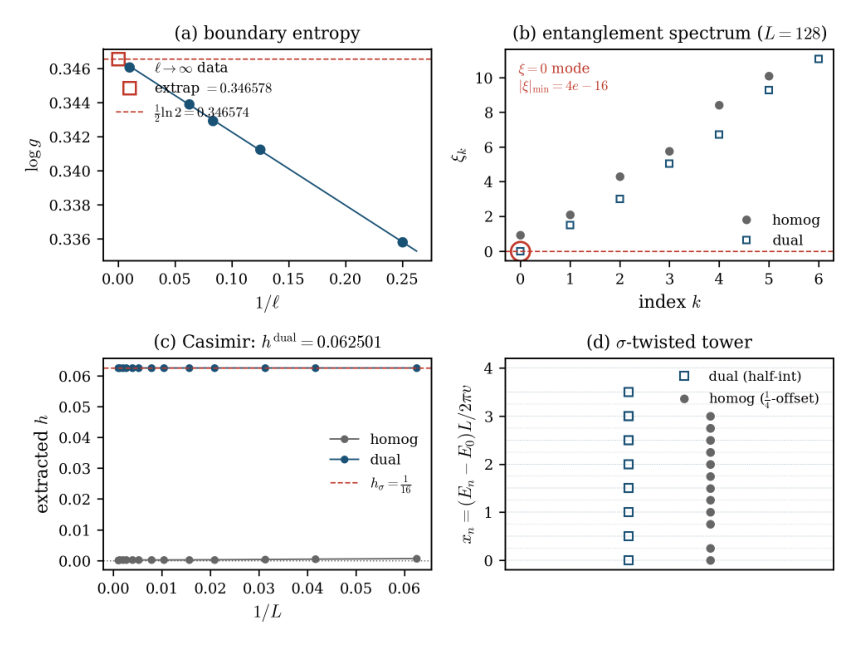
<figcaption class="paper-figure-caption"><b>Fig 1.</b> FIG. 1. Lattice reconstruction of the Ising KW duality-defect categorical data from a single duality-twisted ground state. (a) Boundary entropy: double extrapolation log g →1</figcaption>
</figure>
</div>

<p><strong>Summary.</strong> The paper demonstrates that the exotic topological data associated with non-invertible symmetries, using the Ising model as a test case, can be precisely read out from the single-particle entanglement spectrum of the system's ground state. By identifying specific zero modes and quantized energy levels in the spectrum, the authors provide an exact, measurable signature for these complex quantum phases.</p>
<p><strong>Why it may be interesting.</strong> This work provides a powerful, quantifiable diagnostic tool—the entanglement spectrum—to probe deep topological properties of quantum matter that are usually only accessible via complex field theory techniques. It connects bulk topology to local spectral features.</p>
<details>
<summary>Detailed structure</summary>
<p><strong>Main problem.</strong> To determine how the categorical data of a non-invertible symmetry, characterized by an irrational quantum dimension, manifests microscopically in the entanglement structure of a quantum many-body ground state.</p>
<p><strong>Main result.</strong> The full categorical data ($d_\sigma$, $h_\sigma$, and the conformal tower) is recovered from analyzing the single-particle entanglement spectrum of the duality-twisted ground state. This establishes a level-resolved spectral fingerprint for non-invertible symmetries.</p>
<p><strong>Method.</strong> Analysis involves computing the single-particle entanglement spectrum ($\xi_k$) of the defected ground state, using double extrapolation techniques to find boundary entropy, and extracting conformal weights via Casimir curvature calculations.</p>
<p><strong>Model / system.</strong> The study focuses on the critical Ising chain subjected to a Kramers–Wannier (KW) duality defect. The system is analyzed using free-fermion methods derived from its Hamiltonian structure.</p>
<p><strong>Key observables.</strong> Quantum dimension ($d_\sigma = \sqrt{2}$), Boundary Entropy ($\log g = 1/2 \ln 2$), maximally mixed Majorana zero mode at $\xi=0$, and the half-integer sequence of the $\sigma$-twisted conformal tower.</p>
<p><strong>Important parameters / regimes.</strong> The system size $L$ is taken to infinity for thermodynamic limits; the defect strength is fixed by the KW duality.</p>
<p><strong>Assumptions / limitations.</strong> The analysis relies on the free-fermion solvability of the Ising model, though the diagnostic program is claimed to apply beyond this solvable regime.</p>
<p><strong>Figures summary.</strong> Figures illustrate the reconstruction process: (a) Boundary entropy extrapolation yielding $1/2 \ln 2$; (b) The single-particle spectrum showing the characteristic $\xi=0$ zero mode for the defect; and (c) Comparisons of conformal weights derived from different physical measurements.</p>
<p><strong>Paper structure.</strong> The paper establishes the problem by noting that non-invertible symmetries have defects with irrational quantum dimensions. It then applies entanglement spectral analysis to the KW defect, showing how multiple independent calculations (boundary entropy, zero modes, Casimir curvature) all yield consistent values for the symmetry's defining parameters.</p>
</details>
<details>
<summary>Abstract</summary>
<p>Non-invertible symmetries are characterized by topological defects of irrational quantum dimension, but their imprint on the entanglement of a quantum many-body state has not been resolved at the level of the spectrum. We show that the categorical data of the canonical example -- the Kramers--Wannier (KW) duality defect of the critical Ising chain, with quantum dimension d_sigma=sqrt(2) -- is encoded in the single-particle entanglement spectrum of its ground state: a maximally mixed Majorana zero mode is the spectral origin of the boundary entropy log g=(1/2)log 2, hence of d_sigma itself. Reading the same duality-twisted ground state along two independent routes -- the transfer-matrix momentum shift and the Casimir curvature of the energy -- pins the twist-field weight h_sigma=1/16 twice over, and the defect Hilbert space organizes into a half-integer sigma-twisted conformal tower. This promotes the boundary entropy from an integrated number to a level-resolved spectral signature of non-invertibility, and supplies an exactly solvable calibration target for tensor-network studies of duality defects that lack a free-fermion shortcut.</p>
</details>
<p><sub><a href="#top">↑ back to top</a></sub></p>

<p><a id="paper-2607.00301"></a></p>
<h3 id="generative-modeling-of-quantum-distribution-with-functional-flow-matching"><a href="http://arxiv.org/abs/2607.00301v1">Generative Modeling of Quantum Distribution with Functional Flow Matching</a></h3>
<p><strong>Authors:</strong> Jaehoon Hahm, Tak Hur, Joonseok Lee, Daniel K. Park<br>
<strong>Type:</strong> theory · <strong>Category:</strong> quantum information and computing · <strong>PDF:</strong> <a href="https://arxiv.org/pdf/2607.00301v1">https://arxiv.org/pdf/2607.00301v1</a><br>
<strong>Analysis basis:</strong> full PDF text, analyzed in chunks
<strong>Topic relevance:</strong> 🔥 <code>entanglement &amp; information structure</code> <strong>4/5</strong> · <code>analog quantum simulation</code> <strong>1/5</strong> · <code>methods for driven-dissipative</code> <strong>1/5</strong> · <code>non-equilibrium dynamics</code> <strong>1/5</strong></p>
<div class="figure-strip-hint">↔ Scroll figures horizontally</div>
<div class="paper-figures-scroll">
<figure class="paper-figure-card">
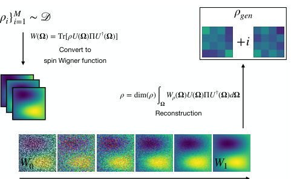
<figcaption class="paper-figure-caption"><b>Fig 1.</b> Figure 1. Overall procedure of QFM. We bypass the direct learn- ing of quantum states by converting them into spin Wigner function and learn the underlying distribution. This approach allows us to effectively generate physically valid and accurate quantum states, which was not achievable by direct learning from density matrices.</figcaption>
</figure>
<figure class="paper-figure-card">
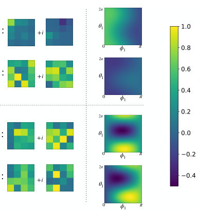
<figcaption class="paper-figure-caption"><b>Fig 2.</b> Figure 2. An Example of two-qubit product states ρ1, ρ2 (top) and two-qubit maximally entangled states σ1, σ2 (bottom), in both density matrix (left) and spin Wigner function (right). For the spin Winger functions, parameterizations on θ1 and ϕ1 are shown, with θ2 and ϕ2 fixed at π and π/2, respec- tively. Random arbitrary single-qubit rotation gates U(α, β, γ) = exp(−iαZ/2) exp(−iβY/2) exp(−iγZ/2) were applied to both qubits of |00⟩for the product states and to both qubits of (|00⟩+ |11⟩)/ √</figcaption>
</figure>
</div>

<p><strong>Summary.</strong> The paper introduces Quantum Flow Matching (QFM), a novel deep generative model designed to learn the distribution of multi-qubit quantum states. It achieves this by mapping density matrices into the spin Wigner function space and applying functional flow matching. QFM proves superior to standard methods because it accurately preserves essential physical properties like purity and entanglement entropy during state generation.</p>
<p><strong>Why it may be interesting.</strong> This work provides a powerful, theoretically grounded generative framework for simulating complex quantum states that respects fundamental physical constraints, which is crucial for designing quantum circuits or analyzing many-body dynamics simulations.</p>
<details>
<summary>Detailed structure</summary>
<p><strong>Main problem.</strong> The challenge is accurately learning and modeling complex quantum distributions using deep generative models while ensuring physical consistency.</p>
<p><strong>Main result.</strong> Quantum Flow Matching (QFM) successfully learns multi-qubit quantum distributions, outperforming standard flow matching by accurately preserving key physical quantities like purity and entanglement entropy.</p>
<p><strong>Method.</strong> The method converts the density matrix into a spin Wigner function representation and then uses Functional Flow Matching to learn the distribution in this function space before reconstructing the quantum state.</p>
<p><strong>Model / system.</strong> The system involves multi-qubit quantum states ($
ho$), which are represented via their corresponding spin Wigner functions ($W(\Omega)$) for processing with generative models.</p>
<p><strong>Key observables.</strong> Trace (Tr[\rho]), Purity (Tr[\rho^2]), and Entanglement Entropy (S(\rho_A)).</p>
<p><strong>Important parameters / regimes.</strong> The number of qubits (single vs. multi-qubit) and the target entanglement entropy value.</p>
<p><strong>Assumptions / limitations.</strong> The reconstruction of the density matrix from the Wigner function relies on an approximation formula derived using Haar random or unitary 2-design distributions.</p>
<p><strong>Figures summary.</strong> Figure 1 illustrates the QFM pipeline ($
ho \rightarrow$ Wigner function $
ightarrow$ FFM learning $
ightarrow$ $\rho_{\text{gen}}$). Tables 1 and 2 quantitatively compare QFM against standard Flow Matching on single and multi-qubit systems regarding purity and entanglement entropy preservation.</p>
<p><strong>Paper structure.</strong> The paper introduces the problem of modeling quantum distributions, proposes QFM using Wigner function mapping and Functional Flow Matching, validates its effectiveness by comparing physical observables (purity, entanglement) across single and multi-qubit examples, and discusses future extensions.</p>
</details>
<details>
<summary>Abstract</summary>
<p>The emergence of powerful deep generative models based on diffusion and flow matching has enabled the learning and modeling of complex distributions. Learning quantum distributions, however, remains challenging due to the inherent difficulty of accurately modeling the meaningful physical properties of quantum states. We propose Quantum Flow Matching (QFM), a novel generative model designed to learn quantum distribution by utilizing spin Wigner function and flow matching. By converting density matrix into the spin Wigner function and leveraging functional flow matching to learn distributions in function space, QFM enables accurate and effective learning of multi-qubit quantum distributions. We demonstrate the effectiveness of our method by evaluating physical quantities such as trace, purity, and entanglement entropy of the generated quantum states, accurately capturing the underlying physics of the given quantum distributions.</p>
</details>
<p><sub><a href="#top">↑ back to top</a></sub></p>

<p><a id="paper-2607.01151"></a></p>
<h3 id="entanglement-fingerprint-of-a-non-invertible-symmetry-exact-fibonacci-cut-charges-on-the-lattice"><a href="http://arxiv.org/abs/2607.01151v1">Entanglement fingerprint of a non-invertible symmetry: exact Fibonacci cut charges on the lattice</a></h3>
<p><strong>Authors:</strong> Yi Liang<br>
<strong>Type:</strong> theory · <strong>Category:</strong> statistical mechanics · <strong>PDF:</strong> <a href="https://arxiv.org/pdf/2607.01151v1">https://arxiv.org/pdf/2607.01151v1</a><br>
<strong>Analysis basis:</strong> full PDF text, analyzed in chunks
<strong>Topic relevance:</strong> 🔥 <code>entanglement &amp; information structure</code> <strong>4/5</strong> · <code>Frenkel-Kontorova</code> <strong>1/5</strong> · <code>Keldysh / 2PI / non-Gaussian methods</code> <strong>1/5</strong></p>
<div class="figure-strip-hint">↔ Scroll figures horizontally</div>
<div class="paper-figures-scroll">
<figure class="paper-figure-card">
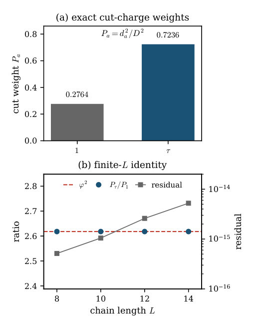
<figcaption class="paper-figure-caption"><b>Fig 1.</b> FIG. 1. Exact finite-size cut-charge fingerprint. (a) The two Fibonacci charge sectors carry fixed weights 𝑃1 = 1/𝐷2 ≈ 0.2764 and 𝑃𝜏 = 𝜙2/𝐷2 ≈0.7236, obtained from the sandwiched-projector identity rather than from a large-𝐿ex- trapolation. (b) The ratio 𝑃𝜏/𝑃1 equals 𝜙2 for every even 𝐿; numerical verification on 𝐿= 8, 10, 12, 14 confirms the iden- tity to machine precision (residual &lt; 5.3 × 10−15).</figcaption>
</figure>
</div>

<p><strong>Summary.</strong> This theoretical paper develops a novel method to find the entanglement fingerprint of non-invertible symmetries directly on a finite lattice. By analyzing cut charges on the Fibonacci golden chain, the authors prove an exact relationship ($P_	au/P_1 = \phi^2$) that yields the boundary entropy without needing to take any thermodynamic limit. This offers a powerful tool for diagnosing exotic topological order in quantum materials.</p>
<p><strong>Why it may be interesting.</strong> It provides an exact, non-perturbative result connecting lattice statistical mechanics (Temperley-Lieb algebra) to continuum conformal field theory concepts (boundary entropy), which is highly relevant for understanding critical phenomena in condensed matter systems.</p>
<details>
<summary>Detailed structure</summary>
<p><strong>Main problem.</strong> To determine if a non-invertible defect leaves an exact, finite-size entanglement fingerprint before any thermodynamic extrapolation is performed.</p>
<p><strong>Main result.</strong> The paper establishes that for the critical Fibonacci golden chain, the ratio of cut-charge weights $P_	au/P_1$ exactly equals $\phi^2$, yielding a lattice-level boundary entropy $\ln g = \ln \phi$.</p>
<p><strong>Method.</strong> The proof relies on deriving and applying a finite-dimensional sandwiched-projector identity combined with a Perron–Frobenius sector theorem.</p>
<p><strong>Model / system.</strong> The system studied is the critical Fibonacci golden chain, which models a non-Abelian setting possessing a non-invertible duality defect ($\Upsilon_	au$). The analysis uses Temperley–Lieb generators and projector operators defined on the lattice.</p>
<p><strong>Key observables.</strong> Cut charges ($P_a$) associated with defects $\{1, 	au\}$, and the ratio $P_	au/P_1$.</p>
<p><strong>Important parameters / regimes.</strong> The golden ratio $\phi$, the system length $L$ (specifically even $L$), and the boundary entropy $\ln g$.</p>
<p><strong>Assumptions / limitations.</strong> The result is specifically a two-charge theorem ($\{1, 	au\}$) and does not assume commutation with the Hamiltonian or rely on standard scaling-limit CFT assumptions.</p>
<p><strong>Figures summary.</strong> Figure 1 numerically verifies that for even lengths $L$, the cut charges exhibit fixed weights ($P_1$ and $P_	au$) such that their ratio is exactly $\phi^2$.</p>
<p><strong>Paper structure.</strong> The paper first introduces the problem of finite-size defect diagnostics, then uses the Perron–Frobenius theorem to select a specific ground state sector. The core mathematical work involves proving the sandwiched-projector identity for this sector, leading directly to the exact ratio calculation.</p>
</details>
<details>
<summary>Abstract</summary>
<p>Non-invertible defects are usually diagnosed through scaling spectra or infrared CFT data. We show that the Fibonacci duality defect of the critical golden chain already carries an exact categorical fingerprint at finite lattice size. The even-length antiferromagnetic ground state has fixed cut-charge weights, giving P_tau/P_1=phi^2 and log g=log phi without finite-size extrapolation. The proof is a finite-dimensional operator identity for the sandwiched cut projectors, combined with a Perron-Frobenius sector theorem for the even-length ground state. This gives a sharp lattice-level boundary entropy for a non-Abelian duality defect. We also separate this exact two-charge result from the finer six-primary tricritical-Ising resolution: the latter is located by the standard scaling-limit Virasoro branching of A_4 affine-TL packets, and is not an assumption in the finite-size theorem.</p>
</details>
<p><sub><a href="#top">↑ back to top</a></sub></p>

<p><a id="paper-2607.01037"></a></p>
<h3 id="quantum-informed-portfolio-selection-an-end-to-end-pipeline-validated-on-trapped-ion-hardware-with-real-market-data"><a href="http://arxiv.org/abs/2607.01037v1">Quantum-Informed Portfolio Selection: An End-to-End Pipeline Validated on Trapped-Ion Hardware with Real Market Data</a></h3>
<p><strong>Authors:</strong> Romina Yalovetzky, Martin J. A. Schuetz, Zichang He, Jiayu Shen, Yue Sun, Rudy Raymond, Shauna Sahay, Kishore Perla, Ruben S. Andrist, Grant Salton, Helmut G. Katzgraber, Roger Bongiovanni, Niraj Kumar, Rob Otter<br>
<strong>Type:</strong> both · <strong>Category:</strong> quantum information and computing · <strong>PDF:</strong> <a href="https://arxiv.org/pdf/2607.01037v1">https://arxiv.org/pdf/2607.01037v1</a><br>
<strong>Analysis basis:</strong> full PDF text, analyzed in chunks
<strong>Topic relevance:</strong> 🔥 <code>QC/QI experiment</code> <strong>4/5</strong> · <code>quantum measurements</code> <strong>2/5</strong></p>
<div class="figure-strip-hint">↔ Scroll figures horizontally</div>
<div class="paper-figures-scroll">
<figure class="paper-figure-card">
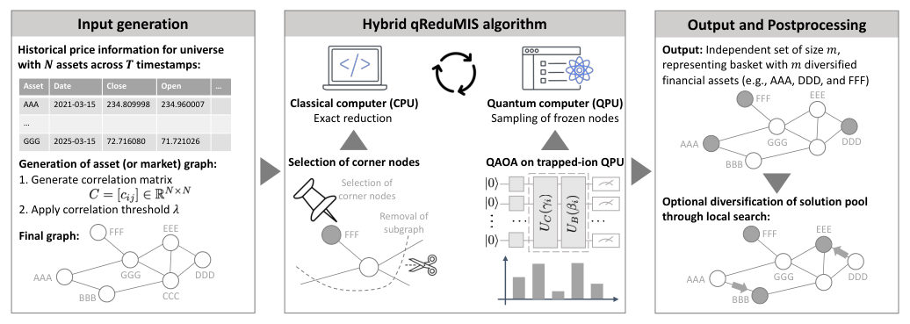
<figcaption class="paper-figure-caption"><b>Fig 1.</b> FIG. 1. End-to-end pipeline for quantum-informed portfolio selection given a universe of N assets. The input asset (or market) graph is generated from the correlation matrix C based on the assets’ returns across T timestamps (diagrammatically shown in the table) and the correlation threshold λ. This graph defines the input to the hybrid (recursive) qReduMIS algorithm to solve the PSP-MIS problem. qReduMIS intermixes exact reduction (in polynomial time) executed on classical hardware (CPU) and sampling of frozen nodes on the QPU, as to unblock the classical exact reduction wrapper when necessary. The set of frozen nodes is identified from quantum measurements (indicated as the output...</figcaption>
</figure>
<figure class="paper-figure-card">
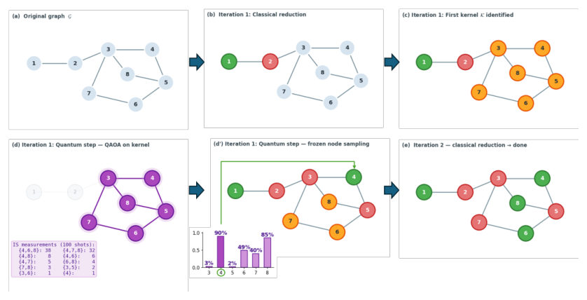
<figcaption class="paper-figure-caption"><b>Fig 2.</b> FIG. 2. Schematic of the qReduMIS algorithm on an 8-node graph G (illustrative; not experimental data). (a) Original graph G. (b) Classical reduction: vertex 1 (degree 1) is selected; its neighbour 2 is removed. (c) The kernel K (orange) is forwarded to the quantum subroutine. (d) QAOA is executed on K (violet); measured independent sets and counts are shown in the inset. (d’) Marginal probabilities computed from the measurements reveal node 4 as the top-ranked node. Following a greedy strategy over the marginals, it is selected and its neighbours {3, 5} removed, triggering a new classical reduction. In practice, ties in marginal probability are broken at random. (e) Classical reduction...</figcaption>
</figure>
<figure class="paper-figure-card">
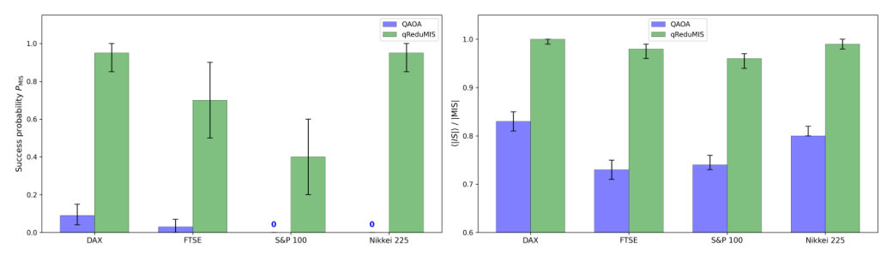
<figcaption class="paper-figure-caption"><b>Fig 3.</b> FIG. 3. Performance comparison of standalone QAOA (blue) and qReduMIS (green) on the first kernel K for four stock market indices (DAX, FTSE, S&amp;P 100, Nikkei 225). Left: Success probability; Right: Average approximation ratio ⟨AR⟩. Error bars indicate 95% bootstrap confidence intervals obtained via 10,000 resamples. For S&amp;P 100 and Nikkei 225, standalone QAOA achieves PMIS = 0. qReduMIS consistently achieves higher success probability, and near-optimal approximation ratio across all indices. Standalone QAOA uses 100 quantum shots; qReduMIS uses 20 classical trials with 10 quantum shots per QPU call, requiring no more than five QPU calls. All experiments use p = 2 QAOA layers on Quantinuum’s...</figcaption>
</figure>
<figure class="paper-figure-card">
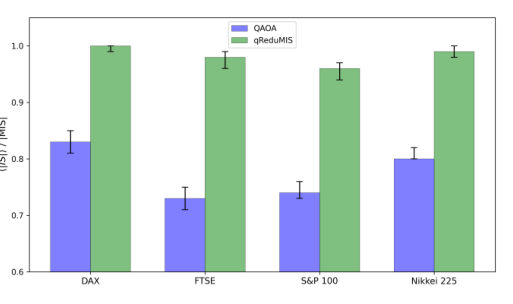
<figcaption class="paper-figure-caption"><b>Fig 4.</b> Fig. 3 presents two figures of merit—end-to-end success probability and average approximation ratio ⟨AR⟩—for each stock market index. All point estimates are accom- panied by 95% bootstrap confidence intervals. We em- ploy an enhanced postprocessing strategy that not only removes constraint-violating nodes but also greedily rein- serts non-conflicting ones. This grants standalone QAOA an additional advantage, since qReduMIS does not rely on sampling the optimal solution directly but rather on identifying frozen nodes via measurement statistics. De- spite this enhanced postprocessing, standalone QAOA fails to sample the optimal solution within 100 shots for</figcaption>
</figure>
<figure class="paper-figure-card">

<figcaption class="paper-figure-caption"><b>Fig 5.</b> FIG. 4. QAOA measurements on the DAX 100 kernel (|K| = 49 nodes, 100 shots on Quantinuum Helios) reveal a strong frozen- node signal despite low success probability. Left: Probability distribution over independent-set sizes from standalone QAOA; the dashed red line marks the ground-truth |MIS| and yellow bins indicate the top-2 largest sizes measured. The probability of sampling the optimal solution is below 10%. Right: Normalized marginal probability of each kernel node, computed over the top-2 largest independent sets (yellow bins on left panel). Green bars indicate in-set nodes (belonging to at least one MIS) and grey bars indicate out-set nodes (absent from all MIS solutions)....</figcaption>
</figure>
</div>

<p><strong>Summary.</strong> This work proposes qReduMIS, an advanced hybrid algorithm that combines classical graph reduction with QAOA measurements to solve the computationally hard Maximum Independent Set problem derived from financial correlation data. By iteratively using quantum insights to guide classical simplification, it significantly outperforms standalone QAOA on real-world market graphs tested on trapped-ion hardware.</p>
<p><strong>Why it may be interesting.</strong> While the application is finance-related, the core technical contribution—developing a robust hybrid quantum-classical framework to tackle NP-hard problems by mitigating sampling limitations of direct quantum optimization—is highly relevant for developing practical algorithms on near-term quantum hardware like trapped ions.</p>
<details>
<summary>Detailed structure</summary>
<p><strong>Main problem.</strong> The core problem is solving Portfolio Diversification, which maps to finding a Maximum Independent Set (MIS) on asset correlation graphs. This is an NP-hard combinatorial optimization challenge.</p>
<p><strong>Main result.</strong> The proposed qReduMIS pipeline significantly outperforms standalone QAOA by leveraging quantum measurements to guide provably optimal classical graph reductions, achieving higher success probabilities and better scaling exponents.</p>
<p><strong>Method.</strong> It employs a recursive hybrid quantum-classical algorithm (qReduMIS) that uses the Quantum Approximate Optimization Algorithm (QAOA) on a smaller kernel graph derived from the full market correlation graph. This guides subsequent classical reduction steps to find the MIS.</p>
<p><strong>Model / system.</strong> The methodology is validated using real financial data from major market indices and executed on Quantinuum's 98-qubit trapped-ion Helios system, with systematic benchmarking performed on a noisy emulator (H2-1).</p>
<p><strong>Key observables.</strong> End-to-end success probability (PMIS), average approximation ratio ($\langle AR 
angle$), and the optimal time-to-solution scaling exponent ($ ext{optTTS}$).</p>
<p><strong>Important parameters / regimes.</strong> The number of QAOA layers ($p=2, 6$), the quantum shot count ($  ext{qshots}$), and the correlation threshold ($\lambda$) used to define graph edges.</p>
<p><strong>Assumptions / limitations.</strong> The success of qReduMIS relies on exploiting 'frozen nodes' identified from marginal probability distributions in QAOA measurements, rather than solely sampling the optimal solution directly.</p>
<p><strong>Figures summary.</strong> Figures compare PMIS and $ ext{optTTS}$ between standalone QAOA and qReduMIS across various indices (S&amp;P 100, Nikkei 225), showing qReduMIS's superior performance and scaling advantage. One figure illustrates the iterative process using node selection based on marginal probabilities.</p>
<p><strong>Paper structure.</strong> The paper introduces the MIS formulation for portfolio optimization, details the hybrid qReduMIS algorithm (classical reduction $
ightarrow$ quantum subroutine $
ightarrow$ classical refinement), benchmarks its performance against standalone QAOA on real market data and systematic graph ensembles, and analyzes scaling laws.</p>
</details>
<details>
<summary>Abstract</summary>
<p>Portfolio diversification - a cornerstone of modern investment management - can be formulated as a Maximum Independent Set (MIS) problem on asset correlation graphs. Solving this problem at scale is computationally challenging, motivating the exploration of quantum algorithms for practical financial optimization. We propose an end-to-end pipeline leveraging qReduMIS, a recursive hybrid quantum-classical algorithm. Rather than using quantum optimization to directly produce a final solution, qReduMIS leverages independent set measurements from the Quantum Approximate Optimization Algorithm (QAOA) to identify frozen nodes - vertices likely to belong to optimal solutions - thereby guiding and unblocking subsequent (provably optimal) classical reductions on the remaining graph. We benchmark qReduMIS on real financial data from four major market indices with up to 225 assets, executing experiments on Quantinuum's 98-qubit trapped-ion Helios system, with QAOA circuits acting on kernels of up to 78 qubits and 1016 two-qubit gates. While standalone QAOA fails to find the optimal solution for two of the largest indices (S&amp;P 100 and Nikkei 225), qReduMIS achieves success probabilities of $0.40$ and $0.95$, respectively, with average approximation ratios $\geq 0.96$ across all four indices. We perform a systematic benchmark on the Quantinuum H2-1 noisy emulator over 73 asset correlation graphs of varying size showing that, for $p=2$ QAOA layers, the optimal time-to-solution scaling exponent of qReduMIS is $3.2$ times smaller than that of standalone QAOA.</p>
</details>
<p><sub><a href="#top">↑ back to top</a></sub></p>

<p><a id="paper-2607.00532"></a></p>
<h3 id="strongly-frustrated-2d-magnetism-in-a-3d-hexagonal-perovskite"><a href="http://arxiv.org/abs/2607.00532v1">Strongly frustrated 2D magnetism in a 3D hexagonal perovskite</a></h3>
<p><strong>Authors:</strong> Bocheng Yu, Otkur Omar, Songtai Lv, Long Ma, Zhengcai Xia, Jing Meng, Yanran Yang, Jie Ma, Yang Xu, Qingfeng Zhan, Vladimir Yu. Pomjakushin, Haiyuan Zou, Shang Gao, Toni Shiroka, Tian Shang<br>
<strong>Type:</strong> both · <strong>Category:</strong> strongly correlated electrons · <strong>PDF:</strong> <a href="https://arxiv.org/pdf/2607.00532v1">https://arxiv.org/pdf/2607.00532v1</a><br>
<strong>Analysis basis:</strong> full PDF text, analyzed in chunks
<strong>Topic relevance:</strong> 🔥 <code>analog quantum simulation</code> <strong>4/5</strong> · <code>exotic spin models in light-matter</code> <strong>1/5</strong> · <code>spintronics-quantum-optics interface</code> <strong>1/5</strong></p>
<div class="figure-strip-hint">↔ Scroll figures horizontally</div>
<div class="paper-figures-scroll">
<figure class="paper-figure-card">

<figcaption class="paper-figure-caption"><b>Fig 1.</b> FIG. 1. (a) Crystal structure of Ba2La2BB′ 2O12 (B = Co, Ni, Mn; B′ = W, Te, Re). (b) Triangular sublattice of the magnetic B ions. (c) Pathways of the B-O-B′-O-B (black solid lines) and B-O-O-B (black dashed lines) superexchange interactions. (d) Temperature-dependent magnetic susceptibility χ(T) for BLMTO collected in a field of 50 mT. The inset shows the inverse susceptibility 1/χ(T). The red solid line represents a fit to the Curie-Weiss law. (e) Temperature-dependent specific heat C(T)/T (left-axis) and magnetic entropy Sm(T) (right-axis) of BLMTO. The magnetic specific heat was obtained by subtracting the specific heat of the nonmagnetic Ba2La2ZnTe2O12 (BLZTO) (empty circles and...</figcaption>
</figure>
<figure class="paper-figure-card">

<figcaption class="paper-figure-caption"><b>Fig 2.</b> FIG. 4. LF-µSR spectra collected in a magnetic field of 0.78 T at selected temperatures, covering both the AFM and PM states of BLMTO. Solid lines are fits to Eq. (2). The applied magnetic field is parallel to the muon-spin direction. The LF-µSR spectra collected at T = 60 K in different magnetic fields are shown in Fig. S10 [32].</figcaption>
</figure>
<figure class="paper-figure-card">
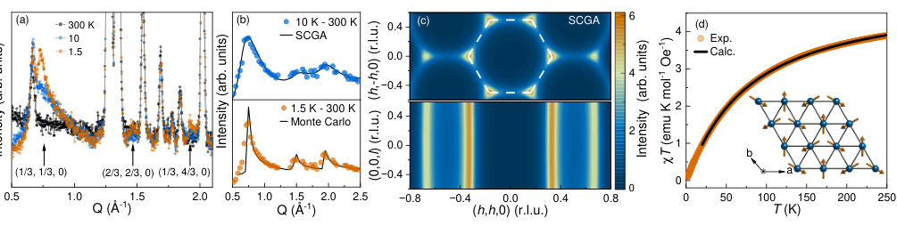
<figcaption class="paper-figure-caption"><b>Fig 3.</b> FIG. 5. (a) NPD patterns collected at T = 1.5, 10, and 300 K reveal asymmetric magnetic Bragg peaks with q = (1/3, 1/3, 0), (2/3, 2/3, 0), and (1/3, 4/3, 0) (marked by arrows). (b) Comparison of experimental- and simulated NPD spectra. Upper panel: experimental data at 10 K is fitted using the J1-J2-Jc model through the SCGA method. Lower panel: experimental data at 1.5 K and the simulated pattern calculated using the fitted J1-J2-Jc model through classical Monte Carlo simulations. (c) Simulated diffuse neutron scattering patterns in the (h, k, 0) and (h, h, l) planes using the fitted J1-J2-Jc calculated from the SCGA method at 10 K. (d) Temperature dependence of the reduced magnetic...</figcaption>
</figure>
<figure class="paper-figure-card">

<figcaption class="paper-figure-caption"><b>Fig 4.</b> FIG. 6. Field-dependent magnetization M(H) collected at T = 1.8 K in magnetic fields up to 32 T (data up to 49 T are presented in Fig. S12 [32]). Red solid and black dash-dotted lines represent the calculated magnetization using spherical (Msphere) and weighted- biaxial averages (Mbiax), respectively. The dashed horizontal line denotes the Ms/3 magnetization plateau.</figcaption>
</figure>
<figure class="paper-figure-card">

<figcaption class="paper-figure-caption"><b>Fig 5.</b> Fig. 6, the magnetization is almost linear in field, confirming the absence of magnetization plateaus and UUD phases in BLMTO. Since both J2 and Jc are much weaker than J1, we employ the nearest-neighbor (NN) TL-X X Z model to calcu- late the magnetization of BLMTO. This model is described by the Hamiltonian:</figcaption>
</figure>
</div>

<p><strong>Summary.</strong> The research reports on $  ext{Ba}<em 12>2   ext{La}_2   ext{MnTe}_2 ext{O}</em>$, demonstrating it hosts strongly frustrated 2D magnetism within a 3D crystal structure. By combining multiple experimental probes, the authors establish that the magnetic ground state features $120^\circ$ AFM order confined to the ab-plane while remaining disordered along c. This challenges existing models of magnetic ordering in related perovskites.</p>
<p><strong>Why it may be interesting.</strong> This work is highly relevant as it explores how dimensionality constraints (forcing 2D magnetism into a 3D crystal) can stabilize exotic, frustrated quantum states that deviate from simple mean-field predictions.</p>
<details>
<summary>Detailed structure</summary>
<p><strong>Main problem.</strong> The study investigates the exotic nature of strongly frustrated two-dimensional (2D) magnetism occurring within a three-dimensional (3D) hexagonal perovskite structure.</p>
<p><strong>Main result.</strong> The material exhibits an ideal 2D magnetic ground state characterized by $120^\circ$ Antiferromagnetic (AFM) order in the ab-plane, while remaining magnetically disordered along the c-axis.</p>
<p><strong>Method.</strong> A combination of advanced experimental techniques ($\mu$SR, Neutron Scattering, NMR) and theoretical modeling (Triangular Lattice Heisenberg Model, Tensor Networks) was employed to characterize the magnetic state.</p>
<p><strong>Model / system.</strong> The physical system is $    ext{Ba}<em 12>2   ext{La}_2   ext{MnTe}_2 ext{O}</em>$), focusing on strong spin fluctuations.}$, a triangular-lattice magnet. The magnetism is modeled using the Triangular Lattice Heisenberg Model (TL-$  ext{XXZ</p>
<p><strong>Key observables.</strong> Magnetic transition temperature ($T_N \approx 4.4$ K), magnetic susceptibility ($\chi(T)$), specific heat anomaly, and nonmagnetic asymmetry ($A_{	ext{NM}}$) from $\mu	ext{SR}$.</p>
<p><strong>Important parameters / regimes.</strong> The frustration ratio $f=14.2$, the effective moment of $    ext{Mn}^{2+}$ ($S=5/2$), and the dimensionality (2D in ab-plane, 3D host).</p>
<p><strong>Assumptions / limitations.</strong> The magnetic state is approximated by an effective model ($  ext{NN TL-XXZ}$), and the interpretation relies on distinguishing between true long-range order and quasi-2D fluctuations.</p>
<p><strong>Figures summary.</strong> Figures illustrate crystal structure, temperature dependence of susceptibility and specific heat, $\mu$SR asymmetry vs. T, and NPD patterns showing magnetic Bragg peaks at wavevectors like $(1/3, 1/3, 0)$.</p>
<p><strong>Paper structure.</strong> The paper systematically combines structural characterization (NPD) with probes sensitive to spin dynamics ($\mu	ext{SR}$, NMR) and thermodynamic measurements ($C(T)$) to build a case for quasi-2D magnetic behavior in the perovskite lattice.</p>
</details>
<details>
<summary>Abstract</summary>
<p>Exotic quantum phenomena are often found to occur in spin systems that exhibit low-dimensional magnetism. By combining nuclear magnetic resonance, neutron scattering, and muon-spin spectroscopy ($μ$SR) techniques, we report a rare instance of strongly frustrated two-dimensional (2D) magnetism in a three-dimensional (3D) hexagonal perovskite. Here, Ba$_2$La$_2$MnTe$_2$O$_{12}$, a triangular-lattice magnet, is shown to undergo a magnetic transition at $T_\mathrm{N} \approx$ 4.4 K, below which the manganese moments form a 120$^{\circ}$ AFM order within the $ab$-plane, while staying disordered along the $c$-axis. This exotic ground state, which exhibits ideal 2D magnetism, is highly consistent with the persistently strong spin fluctuations and the large internal field distributions revealed by zero-field $μ$SR. Further, the 2D magnetism also leads to a significant frustration, much larger than that of most known magnetically-ordered frustrated systems. Our work on Ba$_2$La$_2$MnTe$_2$O$_{12}$ not only challenges the interpretations of magnetic order in other 3D hexagonal perovskites, but it also provides insight into how the dimensionality affects the exotic magnetic states.</p>
</details>
<p><sub><a href="#top">↑ back to top</a></sub></p>

<p><a id="paper-2607.00490"></a></p>
<h3 id="a-versatile-analytical-model-for-fast-and-accurate-determination-of-feedline-coupled-resonators-for-superconducting-qubit-readout"><a href="http://arxiv.org/abs/2607.00490v1">A Versatile Analytical Model for Fast and Accurate Determination of Feedline-Coupled Resonators for Superconducting Qubit Readout</a></h3>
<p><strong>Authors:</strong> Zhen Luo, Lea Richard, Ivan Tsitsilin, Christian M. F. Schneider, Marco Dietz, Stefan Filipp, Amelie Hagelauer<br>
<strong>Type:</strong> both · <strong>Category:</strong> quantum information and computing · <strong>PDF:</strong> <a href="https://arxiv.org/pdf/2607.00490v1">https://arxiv.org/pdf/2607.00490v1</a><br>
<strong>Analysis basis:</strong> full PDF text, analyzed in chunks
<strong>Topic relevance:</strong> 🔥 <code>QC/QI experiment</code> <strong>4/5</strong> · <code>methods for driven-dissipative</code> <strong>1/5</strong></p>
<div class="figure-strip-hint">↔ Scroll figures horizontally</div>
<div class="paper-figures-scroll">
<figure class="paper-figure-card">

<figcaption class="paper-figure-caption"><b>Fig 1.</b> Fig. 1. (a) False-color isometric view of the 3D model, illustrating the feedline-coupled readout resonator system in a flip-chip configuration. The qubit and readout resonator are located on the bottom chip, while the top chip is fully metallized except for some apertures above the qubit. The top chip is intentionally diced to a smaller size than the bottom chip, allowing additional space for wire-bonding pads along the feedline. (b) Cross-sectional view of the coupling section with a false scale to illustrate the stack-up. (c) Top view of the physical layout of the resonator with the top chip unveiled. The resonator is divided into four sections: short-end section (purple), coupling...</figcaption>
</figure>
<figure class="paper-figure-card">

<figcaption class="paper-figure-caption"><b>Fig 2.</b> Fig. 2. E-field distributions for the configuration of top-grounded edge- coupled CPW line with a finite ground plane simulated using Ansys 2D Extractor and the configuration of partial capacitances for the even mode (a) and the odd mode (b).</figcaption>
</figure>
<figure class="paper-figure-card">
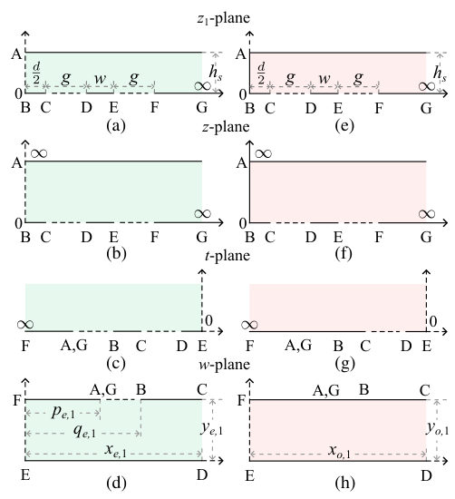
<figcaption class="paper-figure-caption"><b>Fig 3.</b> Fig. 3. Conformal mapping transformation steps to calculate the partial capacitance Ca,m1 for even mode (a)-(d) and odd mode (e)-(h). The solid lines represent PEC boundaries and the dash lines represent PMC boundaries.</figcaption>
</figure>
<figure class="paper-figure-card">
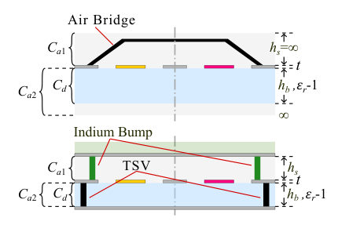
<figcaption class="paper-figure-caption"><b>Fig 4.</b> Fig. 4. Partial capacitances and cross-sectional view of the coupling section for planar architecture (a) and flip-chip architecture with back conductor on bottom chip (b). The plane of symmetry is designated by dash-dot line.</figcaption>
</figure>
<figure class="paper-figure-card">

<figcaption class="paper-figure-caption"><b>Fig 5.</b> Fig. 5. Cross-sectional view of the coupling section for a broadside-coupled CPW line and the field distribution for even mode (a) and odd mode (b).</figcaption>
</figure>
</div>

<p><strong>Summary.</strong> This paper introduces a versatile analytical model to accurately predict the performance parameters ($f_r$ and $Q_c$) of resonators coupled to superconducting qubits. By integrating four-port network analysis with conformal mapping, the authors provide a fast alternative to computationally intensive simulations. The model is rigorously validated against both full-wave EM simulations and physical measurements on test chips.</p>
<p><strong>Why it may be interesting.</strong> This work is highly relevant as it provides essential tools for designing superconducting quantum hardware, directly impacting the feasibility and scalability of qubit readout circuits in quantum computing architectures.</p>
<details>
<summary>Detailed structure</summary>
<p><strong>Main problem.</strong> The primary goal is developing a fast and accurate analytical model to determine the resonance frequencies ($f_r$) and coupling Q-factors ($Q_c$) of feedline-coupled resonators used in superconducting qubit readout circuits.</p>
<p><strong>Main result.</strong> The proposed analytical model successfully predicts $f_r$ and $Q_c$ with high accuracy, showing excellent agreement when compared against both 3D full-wave simulations and physical cryogenic measurements.</p>
<p><strong>Method.</strong> The methodology combines four-port microwave network analysis, conformal mapping techniques to calculate partial capacitances, and the derivation of closed-form expressions for the transmission coefficient ($S_{21}$).</p>
<p><strong>Model / system.</strong> The system involves superconducting $\lambda/4$ resonators coupled via Coplanar Waveguides (CPW) feedlines on a chip, which can be planar or 3D heterogeneous. The model treats this as a four-port network reduced to a two-port analysis.</p>
<p><strong>Key observables.</strong> Resonance frequency ($f_r$), coupling quality factor ($Q_c$), and the transmission coefficient $S_{21}(f)$.</p>
<p><strong>Important parameters / regimes.</strong> Geometric parameters such as gap spacing ($h_s$), resonator lengths ($l_s, l_o$), and conductor thickness ($t$).</p>
<p><strong>Assumptions / limitations.</strong> Key assumptions include using conformal mapping which assumes an infinitely thin conductor ($t=0 	ext{ nm}$), and simplifying the complex geometry into manageable network components.</p>
<p><strong>Figures summary.</strong> Figures illustrate 3D models of the readout system, E-field distributions for even/odd modes in CPW lines, and comparisons (heat maps) showing calculated vs. simulated characteristic impedances across varying geometries.</p>
<p><strong>Paper structure.</strong> The paper progresses from defining the physical problem to deriving the analytical model using network theory and conformal mapping; it then validates this model by comparing predictions against high-fidelity FEM simulations and concluding with experimental measurements on a fabricated test chip.</p>
</details>
<details>
<summary>Abstract</summary>
<p>Superconducting quantum chips commonly utilize quarter-wavelength (λ/4) transmission line resonators as readout circuits. An analytical model for the accurate determination of resonance frequencies and coupling Q-factors of feedline-coupled superconducting resonators is introduced. The model leverages four-port microwave network analysis, integrating boundary conditions and conformal mapping techniques to compute even- and odd-mode impedances in edge-coupled coplanar waveguide (CPW) structures. Its versatility allows application to both planar and 3-D heterogeneous architectures, making it a powerful tool for resonator design. To validate the model, a test chip with λ/4 resonators of varying geometries is fabricated and measured in a cryogenic environment. Comparisons with finite element method (FEM) simulations and experimental measurements confirm the model's accuracy, with resonance frequencies and coupling Q-factors aligning closely across configurations. This proposed model facilitates the design of superconducting resonators in readout circuits for more effective, scalable, and adaptable quantum computing architectures.</p>
</details>
<p><sub><a href="#top">↑ back to top</a></sub></p>

<p><a id="paper-2607.00660"></a></p>
<h3 id="overcoming-the-speed-fidelity-trade-off-in-fast-cz-gates-via-cyclic-control"><a href="http://arxiv.org/abs/2607.00660v1">Overcoming the Speed-Fidelity Trade-off in Fast CZ Gates via Cyclic Control</a></h3>
<p><strong>Authors:</strong> Ze-An Zhao, Hai-Feng Zhang, Tian-Le Wang, Xiao-Yan Yang, Peng Wang, Ren-Ze Zhao, Sheng Zhang, Zhi-Fei Li, Yuan Wu, Zi-Hao Fu, Sheng-Ri Liu, Peng Duan, Guo-Ping Guo<br>
<strong>Type:</strong> experiment · <strong>Category:</strong> quantum information and computing · <strong>PDF:</strong> <a href="https://arxiv.org/pdf/2607.00660v1">https://arxiv.org/pdf/2607.00660v1</a><br>
<strong>Analysis basis:</strong> full PDF text, analyzed in chunks
<strong>Topic relevance:</strong> 🔥 <code>QC/QI experiment</code> <strong>4/5</strong> · <code>non-equilibrium dynamics</code> <strong>1/5</strong></p>
<div class="figure-strip-hint">↔ Scroll figures horizontally</div>
<div class="paper-figures-scroll">
<figure class="paper-figure-card">

<figcaption class="paper-figure-caption"><b>Fig 1.</b> FIG. 1. Geometric mechanism and simulation of the PSE-CZ gate. (a) Left: Cyclic evolution in the base space induces a non- Abelian geometric phase in the U(2) bundle, which is susceptible to hardware imperfections such as STD. Right: Bloch sphere tra- jectories in the |11⟩−|20⟩subspace for a non-cyclic gate resulting from STD (blue) and an ideal cyclic gate (orange); squares denote evolution endpoints. (b) CZ gate pulse sequence (duration τ) uti- lizing flattop Gaussian waveforms with distortions simulated via a Butterworth low-pass filter. The PSE-CZ scheme employs indepen- dent amplitudes ∆1 and ∆2 for the two segments split at the midpoint, with experimental values typically in the range...</figcaption>
</figure>
<figure class="paper-figure-card">
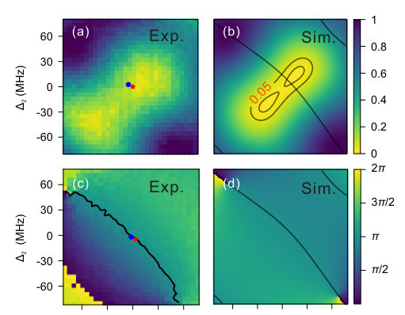
<figcaption class="paper-figure-caption"><b>Fig 2.</b> FIG. 3. Leakage and CPhase landscapes in the expanded param- eter space. (a),(b) Leakage into the |20⟩state and (c),(d) CPhase plotted as a function of ∆1 and ∆2. Panels (a) and (c) display ex- perimental results, while (b) and (d) show simulations under STD. The red star and blue dot in (a) indicate the operating points for the PSE-CZ and traditional CZ gates, respectively. In (b)-(d), PC con- tour lines are superimposed for reference.</figcaption>
</figure>
<figure class="paper-figure-card">

<figcaption class="paper-figure-caption"><b>Fig 3.</b> FIG. 4. Cross-entropy benchmarking (XEB) results. (a) Cumula- tive distribution functions of XEB fidelity (left) and fidelity improve- ment ∆F = FPSE-CZ−FCZ (right) across 20 qubit pairs at a fixed gate duration of 50ns on the 72-qubit processor “Wukong.” This duration was chosen to be compatible with the attainable coupling strengths of the measured qubit pairs. The XEB purity, which characterizes the decoherence-limited fidelity, is shown as lighter-colored dashed lines alongside the XEB fidelity for both PSE-CZ and traditional CZ gates. (b) XEB fidelity for qubit pairs G1 and G2 at gate durations of 40ns, 35ns, and 30ns. In the box plots, dot symbols indicate sta- tistical outliers and...</figcaption>
</figure>
</div>

<p><strong>Summary.</strong> The paper introduces a Parameter-Space Expansion (PSE) control technique to enhance Controlled-Z gates on superconducting qubits. This method overcomes the speed-fidelity trade-off caused by short-timescale waveform distortions. Experimentally, PSE significantly reduces coherent errors and maintains high fidelity even when operating at very fast gate speeds.</p>
<p><strong>Why it may be interesting.</strong> This work directly addresses fundamental limitations in superconducting quantum hardware by providing a general, controllable method to maintain gate integrity at speeds previously thought impossible due to pulse imperfections.</p>
<details>
<summary>Detailed structure</summary>
<p><strong>Main problem.</strong> The primary challenge is overcoming the inherent speed-fidelity trade-off when implementing fast quantum gates, specifically CZ gates, due to short-timescale waveform distortions.</p>
<p><strong>Main result.</strong> A novel cyclic control strategy called Parameter-Space Expansion (PSE) was demonstrated to suppress coherent errors significantly while maintaining high fidelity even in the fast-gate regime, breaking the conventional speed-fidelity limit.</p>
<p><strong>Method.</strong> The authors propose a PSE protocol that introduces an auxiliary degree of freedom by splitting the detuning profile into two segments ($\Delta_1$ and $\Delta_2$) to restore controllability for cyclic evolution.</p>
<p><strong>Model / system.</strong> The work is performed on superconducting qubits (transmons) coupled via tunable couplers, operating in a regime effectively reduced to a two-level subspace $\{|11
angle, |20
angle\}$. The control involves shaping the coupling strength ($g$) and detuning ($\Delta$).</p>
<p><strong>Key observables.</strong> Coherent error rate, gate fidelity (measured by Cross-Entropy Benchmarking), leakage into higher energy states (e.g., $|20
angle$), and CPhase accumulation.</p>
<p><strong>Important parameters / regimes.</strong> Gate duration ($    au &lt; 50$ ns), distortion strength ($\alpha$), coupling strength ($g$), and detuning profiles ($\Delta_1, \Delta_2$).</p>
<p><strong>Assumptions / limitations.</strong> The analysis relies on reducing the dynamics to an effective two-level system due to large detunings suppressing leakage into other manifolds. The STD model is a numerical post-processing step.</p>
<p><strong>Figures summary.</strong> Figures illustrate cyclic evolution failure under distortion, compare error rates of traditional vs. PSE-CZ gates across varying distortion levels and gate durations, and show XEB fidelity improvements demonstrating the speed limit breakthrough.</p>
<p><strong>Paper structure.</strong> The paper details the theoretical necessity of restoring Time-Reflection Symmetry (TFS) constraints; it then presents the experimental implementation using the PSE protocol to achieve robust error suppression and high fidelity in fast CZ gates.</p>
</details>
<details>
<summary>Abstract</summary>
<p>High-fidelity quantum gates are essential for scalable quantum computation. However, at short durations, short-timescale waveform distortions break the time-reflection symmetry of control pulses, preventing the precise closure of cyclic evolution. This mechanism renders conventional symmetric protocols intrinsically over-constrained. Conventional strategies typically rely on smoothing the pulse envelopes or embedding the interaction pulse within a longer qubit pulse to bypass short-timescale distortions, which inevitably leads to a persistent speed-fidelity trade-off. To overcome this limitation, we introduce a cyclic control strategy based on parameter-space expansion, which restores controllability by incorporating an additional degree of freedom. We experimentally demonstrate this approach in a superconducting controlled-Z gate, achieving robust suppression of coherent errors without increasing gate duration, reducing the average coherent error from 0.27% to 0.12% across multiple two-qubit gates, as validated by cross-entropy benchmarking. Our results establish a general route to fast, high-fidelity cyclic quantum gates beyond the conventional speed-fidelity trade-off.</p>
</details>
<p><sub><a href="#top">↑ back to top</a></sub></p>
<hr>
<p>
<a href="index.html">← Index</a>
 · <a href="papers_01.html">← Previous</a> · <a href="papers_03.html">Next →</a>
</p>
<hr>

</body>
</html>
